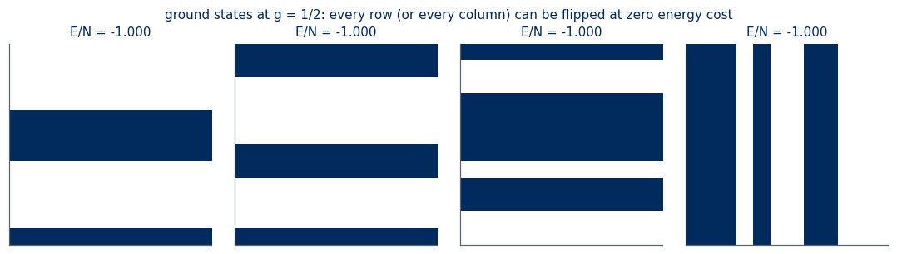
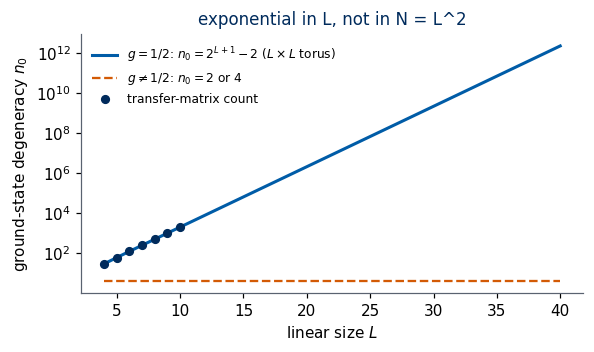
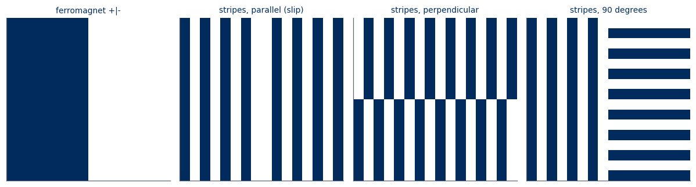
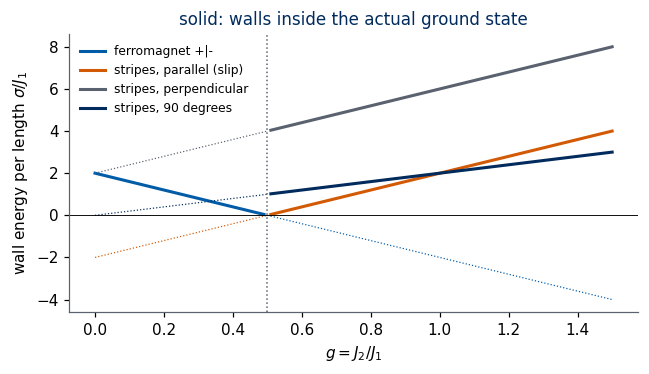
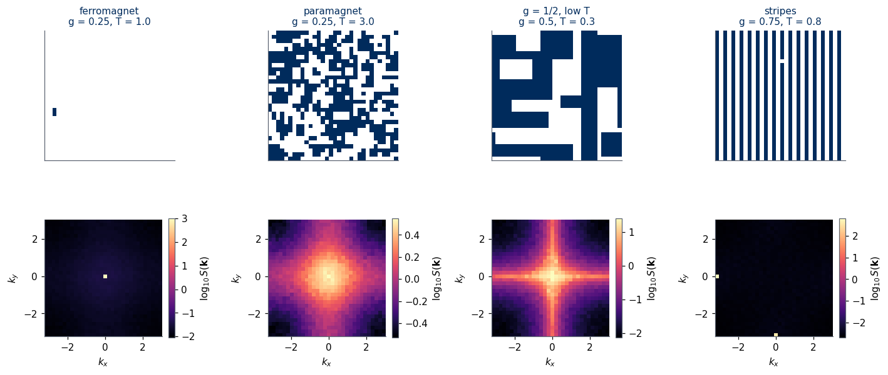
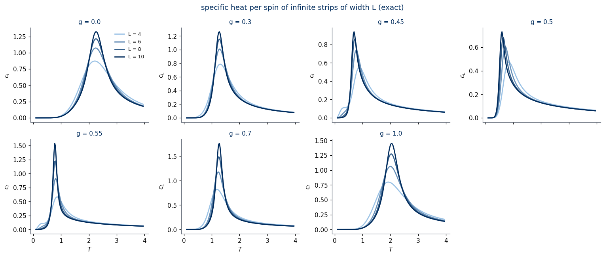
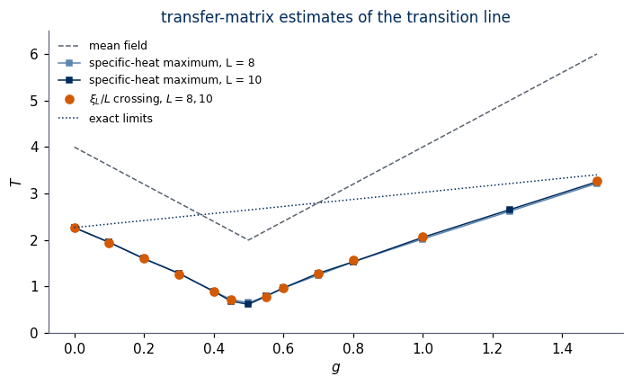
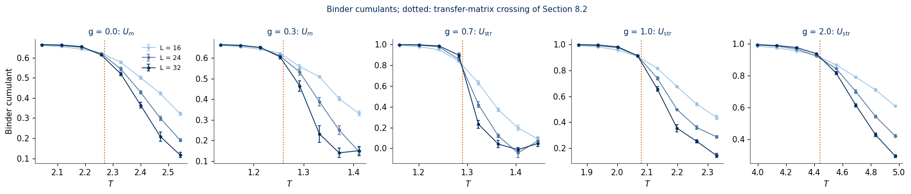
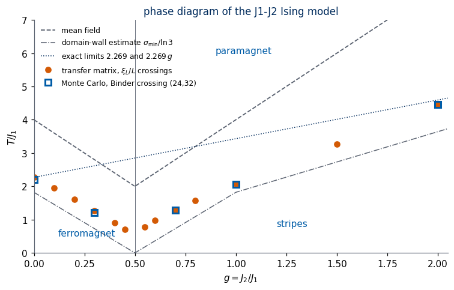

Lab 029 — Physics of the frustrated \(J_1\)–\(J_2\) Ising model
Labs 018–020 use the \(J_1\)–\(J_2\) Ising model as a test bed: Lab 018 generates Monte Carlo snapshots, Labs 019 and 020 ask unsupervised algorithms to find its phases without labels. To judge what an algorithm finds we must know the answer. This notebook contains no machine learning; it collects the physics of the model, derived step by step and checked numerically.
The model in one sentence. Ising spins \(s_i=\pm1\) on a square lattice, a ferromagnetic coupling \(J_1\) between nearest neighbours and an antiferromagnetic coupling \(J_2\) between diagonal neighbours. The two couplings cannot be satisfied at the same time — the model is frustrated — and their ratio \(g=J_2/J_1\) decides which order wins.
Contents.
section
content
method
1
statistical mechanics in brief; frustration of a triangle of bonds
SymPy, enumeration
2
the model, its symmetries, order parameters; the Ashkin–Teller structure of the stripe order
exact checks on configurations
3
ground states for every \(g\), the level crossing at \(g=1/2\), the ground-state degeneracy \(2^{L}+2^{M}-2\) at \(g=1/2\)
SymPy, enumeration, min-plus transfer matrix
4
the energy cost of domain walls, which vanishes at \(g=1/2\)
SymPy, constructed configurations
5
exact limits: Onsager at \(g=0\), two decoupled Ising lattices for \(g\to\infty\)
SymPy, gauge transformation
6
mean-field theory and its failure
SymPy, self-consistency, Fourier analysis
7
Monte Carlo in JAX and the static structure factor \(S(\boldsymbol k)\)
Metropolis on four sublattices
8
exact transfer matrices of infinite strips: free energy, specific heat, residual entropy, \(T_c(g)\)
numerical diagonalisation
9
Binder cumulants and \(T_c(g)\) from Monte Carlo
JAX, vmap + lax.scan
10
the nature of the transitions in the literature
references
11
summary, exercises with solutions
Units: \(k_B=1\), \(J_1=1\); temperatures are in units of \(J_1\).
How to run this notebook in Google Colab 1. Go to https://colab.research.google.com → File → Upload notebook. 2. Run the cells in order with Shift + Enter; later cells use variables defined earlier. 3. Needed packages: numpy, scipy, sympy, matplotlib, jax — all pre-installed in Colab. No data are downloaded. 4. Everything runs on the CPU. The slow cells (transfer matrices of size up to \(2^{12}\times2^{12}\) and the Monte Carlo runs of Section 9) print their running time.
Code
import osos.environ["JAX_PLATFORMS"] ="cpu"# run JAX on the CPU onlyos.environ["CUDA_VISIBLE_DEVICES"] =""import timeimport itertoolsfrom functools import partialimport numpy as npimport sympy as spimport matplotlib.pyplot as pltfrom matplotlib.colors import LinearSegmentedColormap, ListedColormapfrom scipy.linalg import eighfrom scipy.sparse.linalg import eigshfrom scipy.optimize import brentqimport jaximport jax.numpy as jnpfrom jax import laxT_START = time.perf_counter()print("JAX", jax.__version__, "| devices:", jax.devices())# UJ coloursUJBlue, UJNavy, DSOrange, UJGray ="#005CA7", "#002B5C", "#D35A05", "#5A6270"blues = LinearSegmentedColormap.from_list("uj_blues", ["#9CC3E6", UJNavy]) # light -> dark: small L -> large LSPIN_CMAP = ListedColormap(["#FFFFFF", UJNavy]) # s = -1 white, s = +1 navyplt.rcParams.update({"figure.dpi": 110, "axes.spines.top": False, "axes.spines.right": False,"axes.edgecolor": UJGray, "axes.titlesize": 11, "axes.titlecolor": UJNavy,"axes.prop_cycle": plt.cycler(color=[UJBlue, DSOrange, UJNavy, UJGray])})TC_ISING =2.0/ np.log(1.0+ np.sqrt(2.0)) # Onsager's critical temperature of the square-lattice Ising model (J = 1)print(f"Onsager: T_c(g = 0) = 2 / ln(1 + sqrt 2) = {TC_ISING:.10f}")
1. Statistical mechanics in brief, and frustration
Motivation. Many students of this course come from computer science or mathematics. This section recalls the five objects of statistical mechanics that the notebook uses — energy, Boltzmann weight, partition function, free energy, order parameter — and then introduces the one new idea of the model: frustration. Lab 012 develops the same material at length for the ordinary Ising model.
Configurations and energy. A configuration is a vector \(\mathbf s=(s_1,\dots,s_N)\in\{-1,+1\}^N\) of \(N\) spins. A Hamiltonian \(H(\mathbf s)\) assigns it an energy. For pair interactions \[
H(\mathbf s) = -\sum_{i<j}J_{ij}\,s_is_j ,
\] a bond with \(J_{ij}>0\) is ferromagnetic (energy \(-J_{ij}\) if \(s_i=s_j\), \(+J_{ij}\) otherwise) and a bond with \(J_{ij}<0\) is antiferromagnetic. A bond is satisfied when it has its lower energy.
Boltzmann weight and partition function. In thermal equilibrium at temperature \(T\) a configuration occurs with probability \[
p(\mathbf s) = \frac{e^{-\beta H(\mathbf s)}}{Z},\qquad \beta=\frac1T,\qquad Z(T) = \sum_{\mathbf s}e^{-\beta H(\mathbf s)} .
\] At low \(T\) the low-energy configurations dominate; at high \(T\) all \(2^N\) configurations become equally likely.
Free energy and thermodynamics. The free energy per spin \(f = -\frac{T}{N}\ln Z\) generates all thermal averages: the energy per spin is \(u = \partial(\beta f)/\partial\beta = \langle H\rangle/N\), the specific heat per spin is \(c = \partial u/\partial T = (\langle H^2\rangle-\langle H\rangle^2)/(NT^2)\), and the entropy per spin is \(s=(u-f)/T\). A phase transition is a temperature at which \(f\), in the limit \(N\to\infty\), is not an analytic function of \(T\).
Order parameter. An ordered phase is recognised by a quantity that is non-zero in it and zero in the disordered (paramagnetic) phase: for a ferromagnet the magnetisation \(m = \frac1N\sum_is_i\). The Hamiltonian is invariant under \(\mathbf s\to-\mathbf s\), so \(\langle m\rangle=0\) on any finite lattice; one therefore uses \(\langle|m|\rangle\) or \(\langle m^2\rangle\). Choosing the order parameter requires knowing what pattern the spins form — the subject of Sections 2–3 for our model.
1.1 Frustration on a triangle of bonds
Motivation. On the square lattice with only ferromagnetic bonds all bonds can be satisfied at once (all spins up). Adding a diagonal antiferromagnetic bond creates a triangle — two nearest-neighbour bonds and one diagonal — whose bonds cannot all be satisfied.
The triangle. Sites \(1,2,3\) with \(1\)–\(2\) and \(2\)–\(3\) nearest neighbours and \(1\)–\(3\) diagonal neighbours: \[
H_\triangle = -J_1(s_1s_2+s_2s_3) + J_2\,s_1s_3 .
\] Satisfying both \(J_1\) bonds requires \(s_1=s_2=s_3\); then \(s_1s_3=+1\) and the \(J_2\) bond is broken. Satisfying the \(J_2\) bond requires \(s_1=-s_3\), and then \(s_2\) agrees with only one of them. General criterion: going around a closed loop of bonds, multiply the signs of the couplings (ferromagnetic \(+\), antiferromagnetic \(-\)). If the product is negative, at least one bond on the loop is broken in every configuration. Proof: the product of the bond variables \(s_is_j\) around a loop is \(\prod_i s_i^2=+1\); a satisfied bond has \(s_is_j=\operatorname{sign}J_{ij}\), so if all bonds were satisfied the product of signs would be \(+1\). Our triangle has signs \((+,+,-)\): it is frustrated.
The cell below lists the eight states of the triangle with SymPy, energies as symbolic functions of \(J_1,J_2\), and counts broken bonds.
Code
J1s, J2s, gs_ = sp.symbols("J_1 J_2 g", positive=True)def H_triangle(s1, s2, s3):# energy of the triangle: two nearest-neighbour bonds (1-2, 2-3) and one diagonal bond (1-3)return-J1s * (s1 * s2 + s2 * s3) + J2s * s1 * s3print(" s1 s2 s3 energy broken bonds")for s in itertools.product([1, -1], repeat=3):if s[0] ==-1: # the global flip gives the same energy: list one state of each paircontinue broken =int(s[0] * s[1] <0) +int(s[1] * s[2] <0) +int(s[0] * s[2] >0)print(f" {s[0]:+d}{s[1]:+d}{s[2]:+d}{str(H_triangle(*s)):18s}{broken}")# the product of coupling signs around the loop (+J1, +J1, -J2) is negative: at least one broken bond in every statemin_broken =min(int(s[0]*s[1] <0) +int(s[1]*s[2] <0) +int(s[0]*s[2] >0) for s in itertools.product([1, -1], repeat=3))assert min_broken ==1print(f"minimum number of broken bonds over all 8 states: {min_broken}")
s1 s2 s3 energy broken bonds
+1 +1 +1 -2*J_1 + J_2 1
+1 +1 -1 -J_2 1
+1 -1 +1 2*J_1 + J_2 3
+1 -1 -1 -J_2 1
minimum number of broken bonds over all 8 states: 1
What we learned. Every state of the triangle breaks at least one bond, and two kinds of state compete: \((+,+,+)\) with energy \(-2J_1+J_2\) (the diagonal bond broken) and \((+,+,-)\), \((+,-,-)\) with energy \(-J_2\) (one nearest-neighbour bond broken). For an isolated triangle the first wins when \(-2J_1+J_2<-J_2\), i.e. \(J_2<J_1\). On the lattice every nearest-neighbour bond is shared by several triangles, so the balance point moves; Section 3 shows that it is \(J_2=J_1/2\). Frustration does not by itself say which state wins — it says that some bonds must be broken, and the question becomes which compromise has the lowest energy and how many compromises of equal energy exist.
2. The model, its symmetries and its order parameters
Motivation. Symmetries decide which ordered states are degenerate, which order parameter measures them, and — through the symmetry group of the order parameter — which universality class a continuous transition can belong to. We establish them once here and use them in every later section.
The Hamiltonian. Spins \(s_{x,y}=\pm1\) on an \(L\times L\) square lattice with periodic boundaries (a torus), \(x,y\in\{0,\dots,L-1\}\), \(N=L^2\): \[
H(\mathbf s) = -J_1\sum_{\langle i,j\rangle}s_is_j + J_2\sum_{\langle\langle i,j\rangle\rangle}s_is_j
= -J_1\,B_1(\mathbf s) + J_2\,B_2(\mathbf s),\qquad g=\frac{J_2}{J_1}\ge0 ,
\] the convention of Lab 018. Here \(\langle i,j\rangle\) runs over the \(2N\) nearest-neighbour bonds (horizontal \((x,y)\)–\((x+1,y)\) and vertical \((x,y)\)–\((x,y+1)\)), \(\langle\langle i,j\rangle\rangle\) over the \(2N\) diagonal bonds (\((x,y)\)–\((x+1,y+1)\) and \((x,y)\)–\((x+1,y-1)\)), and \(B_1=\sum_{\langle ij\rangle}s_is_j\), \(B_2=\sum_{\langle\langle ij\rangle\rangle}s_is_j\) are integers in \([-2N,2N]\). With \(J_1=1\) the energy is \(H=-B_1+gB_2\): computing \(B_1,B_2\) once gives the energy for every \(g\). We also split \(B_1=B_1^{x}+B_1^{y}\) into horizontal and vertical bonds.
Symmetries. A symmetry is a map of configurations that leaves \(H\) unchanged.
Global spin flip\(\mathbf s\to-\mathbf s\): every product \(s_is_j\) is unchanged. This is the \(\mathbb Z_2\) symmetry of every Ising model.
Lattice symmetries: translations by one site, rotation by \(90^\circ\), reflections. They map nearest-neighbour bonds onto nearest-neighbour bonds and diagonal bonds onto diagonal bonds.
Two gauge transformations (sign changes of a subset of spins; they are not symmetries of \(H\) but map it onto another Hamiltonian):
Checkerboard gauge\(s_{x,y}\to(-1)^{x+y}s_{x,y}\). Nearest neighbours have opposite parity of \(x+y\), so every nearest-neighbour product changes sign; diagonal neighbours have equal parity, so diagonal products are unchanged: \(B_1\to-B_1\), \(B_2\to B_2\). The model with antiferromagnetic \(J_1\) has exactly the same thermodynamics as ours (Néel order maps onto ferromagnetic order). Several papers in Section 10 use \(J_1<0\) (nearest-neighbour antiferromagnet) or write \(J_1<0\) for the ferromagnet; their phase diagrams apply here without change.
Column gauge\(s_{x,y}\to(-1)^{x}s_{x,y}\). Horizontal and diagonal bonds join different \(x\) parities and change sign, vertical bonds do not: \(B_1^x\to-B_1^x\), \(B_1^y\to B_1^y\), \(B_2\to-B_2\). Section 5 uses it for the limit \(g\to\infty\).
The cell below checks all of these on random configurations.
Code
def bond_sums(s):# s: (..., L, L) array of +-1; axis -2 is x, axis -1 is y; periodic boundaries.# Returns (B1x, B1y, B2): sums of s_i s_j over horizontal, vertical and diagonal bonds (each bond counted once), integer arrays of shape (...). s = np.asarray(s, dtype=np.int64) ax = (-2, -1) b1x = (s * np.roll(s, -1, -2)).sum(ax) # (x,y)-(x+1,y) b1y = (s * np.roll(s, -1, -1)).sum(ax) # (x,y)-(x,y+1) b2 = (s * np.roll(s, (-1, -1), ax)).sum(ax) + (s * np.roll(s, (-1, 1), ax)).sum(ax) # (x,y)-(x+1,y+1) and (x,y)-(x+1,y-1)return b1x, b1y, b2def energy(s, g, J1=1.0):# H = -J1 B1 + J2 B2 with J2 = g J1; shape (...) b1x, b1y, b2 = bond_sums(s)return-J1 * (b1x + b1y) + g * J1 * b2rng = np.random.default_rng(0)L =8S_rand = rng.choice([-1, 1], size=(1000, L, L)) # 1000 random configurations, shape (1000, 8, 8)x, y = np.meshgrid(np.arange(L), np.arange(L), indexing="ij") # x[i, j] = i, y[i, j] = jb1x, b1y, b2 = bond_sums(S_rand)ops = {"global flip": -S_rand,"translation x -> x+1": np.roll(S_rand, 1, -2),"rotation by 90 degrees": np.rot90(S_rand, 1, axes=(-2, -1)),"reflection x -> -x": np.roll(S_rand[..., ::-1, :], 1, -2)}for name, S2 in ops.items(): c = bond_sums(S2)print(f"{name:24s}: B1 unchanged {np.array_equal(c[0] + c[1], b1x + b1y)}, B2 unchanged {np.array_equal(c[2], b2)}")c = bond_sums(S_rand * (-1) ** (x + y))print(f"checkerboard gauge : B1 -> -B1 {np.array_equal(c[0] + c[1], -(b1x + b1y))}, B2 unchanged {np.array_equal(c[2], b2)}")c = bond_sums(S_rand * (-1) ** x)print(f"column gauge : B1x -> -B1x {np.array_equal(c[0], -b1x)}, B1y unchanged {np.array_equal(c[1], b1y)}, B2 -> -B2 {np.array_equal(c[2], -b2)}")
2.1 Order parameters and the symmetry of the stripe states
Fourier components of the spins. Periodic patterns are described by \[
m_{\boldsymbol k}(\mathbf s) = \frac1N\sum_{\boldsymbol r}s_{\boldsymbol r}\,e^{i\boldsymbol k\cdot\boldsymbol r},\qquad \boldsymbol r=(x,y),\quad
\boldsymbol k\in\Big\{\tfrac{2\pi}{L}(n_x,n_y)\Big\}.
\] Three candidate orders (derived as ground states in Section 3) and their order parameters:
order
pattern \(s_{x,y}\)
wave vector
order parameter
ferromagnet
\(\pm1\)
\((0,0)\)
\(m = m_{(0,0)}\)
stripes
\(\pm(-1)^x\) (vertical) or \(\pm(-1)^y\) (horizontal)
For \(\boldsymbol k\) with components \(0\) or \(\pi\), \(e^{i\boldsymbol k\cdot\boldsymbol r}=\pm1\) and \(m_{\boldsymbol k}\) is real.
Four stripe states. The stripe phase has four ground states: two orientations times the global flip. In the plane \((m_x,m_y)\) they sit at \((\pm1,0)\) (vertical stripes) and \((0,\pm1)\) (horizontal stripes). The ferromagnet has two states, \(m=\pm1\), on a line.
The symmetry group seen by the stripe order parameter. The lattice symmetries act on \((m_x,m_y)\) as follows:
translation \(x\to x+1\): \((-1)^{x}\) changes sign, so \((m_x,m_y)\to(-m_x,m_y)\); translation in \(y\) gives \((m_x,-m_y)\);
rotation by \(90^\circ\), \((x,y)\to(-y,x)\): the factor \((-1)^x\) becomes \((-1)^y\), so \((m_x,m_y)\to(m_y,m_x)\);
global flip: \((m_x,m_y)\to(-m_x,-m_y)\).
A sign change of one component and the exchange of the two components generate the eight symmetries of a square (the dihedral group \(D_4\)). The ferromagnetic order parameter sees only \(\mathbb Z_2\) (\(m\to-m\)). This difference matters: an order parameter with two components and the symmetry of a square is exactly that of the Ashkin–Teller model [Ashkin & Teller 1943], two Ising spins \(\sigma_i,\tau_i\) per site coupled by \(-K_2(\sigma_i\sigma_j+\tau_i\tau_j)-K_4\,\sigma_i\sigma_j\tau_i\tau_j\). The four stripe states correspond to the four values of \((\sigma,\tau)\); one possible identification is \(\sigma=\operatorname{sign}(m_x+m_y)\), \(\tau=\operatorname{sign}(m_x-m_y)\). This is why the stripe transition, unlike the ferromagnetic one, can belong to the Ashkin–Teller class, whose critical exponents vary continuously along a line [Jin, Sen, Sandvik 2012]. Section 5 shows the same structure from the \(g\to\infty\) limit, where \(\sigma\) and \(\tau\) become the magnetisations of two decoupled sublattices.
The cell below applies the lattice operations to the four stripe states, prints the action on \((m_x,m_y)\), and generates the group from two of its elements.
Code
def order_params(s):# s: (..., L, L) -> dict of m, m_x = m_(pi,0), m_y = m_(0,pi), m_(pi,pi), each of shape (...) L = s.shape[-1] ph = (-1.0) ** np.arange(L) s = np.asarray(s, dtype=float)return {"m": s.mean((-2, -1)),"mx": (s * ph[:, None]).mean((-2, -1)),"my": (s * ph[None, :]).mean((-2, -1)),"mpp": (s * ph[:, None] * ph[None, :]).mean((-2, -1))}L =8x, y = np.meshgrid(np.arange(L), np.arange(L), indexing="ij")stripes = {"V+": (-1) ** x, "V-": -(-1) ** x, "H+": (-1) ** y, "H-": -(-1) ** y}lattice_ops = {"translate x": lambda s: np.roll(s, 1, 0), "translate y": lambda s: np.roll(s, 1, 1),"rotate 90": lambda s: np.rot90(s), "global flip": lambda s: -s}def label(s):# name of the stripe state with the same (m_x, m_y) o = order_params(s)for k, v in stripes.items(): ov = order_params(v)if np.isclose(o["mx"], ov["mx"]) and np.isclose(o["my"], ov["my"]):return kprint("energy per spin of the four stripe states at g = 0.7:", [float(energy(v, 0.7)) / L**2for v in stripes.values()])print("\n operation "+" ".join(f"{k}->"for k in stripes))for name, op in lattice_ops.items():print(f" {name:12s} "+" ".join(f"{label(op(v)):>4s}"for v in stripes.values()))# the action on (m_x, m_y) as 2x2 matrices, and the group they generateR = np.array([[0, 1], [1, 0]]) # rotation: exchange m_x and m_yTx = np.array([[-1, 0], [0, 1]]) # translation in x: m_x -> -m_xgroup = {R.tobytes(): R, Tx.tobytes(): Tx}whileTrue: new = {(a @ b).tobytes(): a @ b for a in group.values() for b in group.values()}if new.keys() <= group.keys():break group.update(new)print(f"\nnumber of distinct 2x2 matrices generated by 'rotate' and 'translate x': {len(group)} (the symmetry group of a square, D4, has 8)")
energy per spin of the four stripe states at g = 0.7: [-1.4, -1.4, -1.4, -1.4]
operation V+-> V--> H+-> H-->
translate x V- V+ H+ H-
translate y V+ V- H- H+
rotate 90 H+ H- V- V+
global flip V- V+ H- H+
number of distinct 2x2 matrices generated by 'rotate' and 'translate x': 8 (the symmetry group of a square, D4, has 8)
What we learned. The Hamiltonian has the global \(\mathbb Z_2\) flip and the lattice symmetries. Ferromagnetic order breaks only \(\mathbb Z_2\) (two states); stripe order breaks \(\mathbb Z_2\)and the \(90^\circ\) rotation (four states), and its two-component order parameter transforms under the eight-element group \(D_4\), as in the Ashkin–Teller model. The checkerboard gauge shows that the sign of \(J_1\) is irrelevant for thermodynamics.
3. Ground states
Motivation. At \(T=0\) the Boltzmann weight selects the configurations of minimum energy. They tell us which orders can appear at low temperature, and their number (the degeneracy) tells us how strongly thermal fluctuations will compete with them. For this model the answer changes qualitatively at one value of \(g\).
3.1 Three candidates by bond counting
Every spin has 4 nearest neighbours and 4 diagonal neighbours; each bond is shared by two spins, so there are 2 nearest-neighbour bonds and 2 diagonal bonds per spin. For a periodic pattern the energy per spin is the average over one unit cell of \(-J_1(s_{x,y}s_{x+1,y}+s_{x,y}s_{x,y+1})+J_2(s_{x,y}s_{x+1,y+1}+s_{x,y}s_{x+1,y-1})\).
Ferromagnet (all \(+1\)): both nearest-neighbour products \(+1\), both diagonal products \(+1\) (both diagonal bonds broken): \(E/N=-2J_1+2J_2\).
Néel\((-1)^{x+y}\): both nearest-neighbour products \(-1\), both diagonal products \(+1\): \(E/N=+2J_1+2J_2\).
The ferromagnet and the stripes cross where \(-2J_1+2J_2=-2J_2\), i.e. at \(g=1/2\). SymPy reproduces the counting on the \(2\times2\) unit cell and solves for the crossing.
Code
def energy_per_spin_pattern(P):# symbolic energy per spin of a pattern of period 2 in x and y; P(x, y) returns +-1 e =0for x0, y0 in itertools.product(range(2), repeat=2): s = P(x0, y0) e +=-J1s * (s * P((x0 +1) %2, y0) + s * P(x0, (y0 +1) %2)) \+ J2s * (s * P((x0 +1) %2, (y0 +1) %2) + s * P((x0 +1) %2, (y0 -1) %2))return sp.simplify(e /4)patterns_sym = {"ferromagnet": lambda x, y: 1, "stripes": lambda x, y: (-1) ** x, "Neel": lambda x, y: (-1) ** (x + y)}E_sym = {k: energy_per_spin_pattern(P) for k, P in patterns_sym.items()}for k, v in E_sym.items():print(f"E/N ({k:11s}) = {v}")g_cross = sp.solve(sp.Eq(E_sym["ferromagnet"], E_sym["stripes"]), J2s)print("ferromagnet = stripes at J_2 =", g_cross, " i.e. g =", sp.simplify(g_cross[0] / J1s))print("Neel - min(ferromagnet, stripes) =", sp.simplify(E_sym["Neel"] - E_sym["ferromagnet"]), "and", sp.simplify(E_sym["Neel"] - E_sym["stripes"]), "(both > 0 for J_1 > 0)")# numerical check on an 8x8 torus with the bond-sum function of Section 2L =8x, y = np.meshgrid(np.arange(L), np.arange(L), indexing="ij")for gv in (0.2, 0.5, 0.9): num = [energy(np.ones((L, L)), gv) / L**2, energy((-1) ** x, gv) / L**2, energy((-1) ** (x + y), gv) / L**2] sym = [float(E_sym[k].subs({J1s: 1, J2s: gv})) for k in ("ferromagnet", "stripes", "Neel")]print(f"g = {gv}: numerical {np.round(num, 6)} symbolic {np.round(sym, 6)}")
E/N (ferromagnet) = -2*J_1 + 2*J_2
E/N (stripes ) = -2*J_2
E/N (Neel ) = 2*J_1 + 2*J_2
ferromagnet = stripes at J_2 = [J_1/2] i.e. g = 1/2
Neel - min(ferromagnet, stripes) = 4*J_1 and 2*J_1 + 4*J_2 (both > 0 for J_1 > 0)
g = 0.2: numerical [-1.6 -0.4 2.4] symbolic [-1.6 -0.4 2.4]
g = 0.5: numerical [-1. -1. 3.] symbolic [-1. -1. 3.]
g = 0.9: numerical [-0.2 -1.8 3.8] symbolic [-0.2 -1.8 3.8]
3.2 The plaquette bound: a proof of the ground states
Motivation. Section 3.1 compared three guesses. A proof must exclude every other configuration. We write \(H\) as a sum over the \(N\) elementary squares (plaquettes) and bound each term from below.
Plaquette decomposition. Label the corners of the plaquette with lower-left corner \((x,y)\) as \(a=(x,y)\), \(b=(x+1,y)\), \(c=(x+1,y+1)\), \(d=(x,y+1)\). Every nearest-neighbour bond is an edge of exactly two plaquettes; every diagonal bond is a diagonal of exactly one plaquette. Therefore \[
H = \sum_{P}h_P,\qquad h_P = -\frac{J_1}{2}\big(s_as_b+s_bs_c+s_cs_d+s_ds_a\big) + J_2\big(s_as_c+s_bs_d\big).
\]The bound.\(H\ge N\min h_P\), where the minimum runs over the 16 states of one plaquette. If a configuration reaches the minimum on every plaquette simultaneously, it is a ground state and the bound is the ground-state energy.
The cell lists \(h_P\) for all 16 plaquette states with SymPy (with \(J_1=1\), \(J_2=g\)), finds the lower envelope, and checks the decomposition numerically.
Code
def h_plaquette(a, b, c, d, J1=1, J2=gs_):# energy of one plaquette, corners a, b, c, d in cyclic orderreturn-sp.Rational(1, 2) * J1 * (a * b + b * c + c * d + d * a) + J2 * (a * c + b * d)plaq = {}for st in itertools.product([1, -1], repeat=4): plaq.setdefault(sp.expand(h_plaquette(*st)), []).append(st)print("distinct plaquette energies h_P(g) and the number of plaquette states with that energy:")for h, sts insorted(plaq.items(), key=lambda kv: float(kv[0].subs(gs_, 0.3))):print(f" h_P = {str(h):10s} ({len(sts):2d} states), e.g. corners a,b,c,d = {sts[0]}")# lower envelope of the distinct linear functions on a grid of g, compared with min(-2 + 2g, -2g)g_grid = np.linspace(0, 2, 2001)env = np.min([sp.lambdify(gs_, h)(g_grid) * np.ones_like(g_grid) for h in plaq], axis=0)print("max |lower envelope - min(-2+2g, -2g)| on g in [0, 2]:", np.abs(env - np.minimum(-2+2* g_grid, -2* g_grid)).max())# numerical check of the decomposition H = sum_P h_P on random configurationsdef plaquette_energies(s, g): a, b = s, np.roll(s, -1, 0); c, d = np.roll(s, (-1, -1), (0, 1)), np.roll(s, -1, 1)return-0.5* (a * b + b * c + c * d + d * a) + g * (a * c + b * d) # shape (L, L): one value per plaquetteS8 = np.random.default_rng(1).choice([-1, 1], size=(200, 8, 8))dev =max(abs(plaquette_energies(s, 0.37).sum() - energy(s, 0.37)) for s in S8)print(f"max |sum_P h_P - H| over 200 random 8x8 configurations at g = 0.37: {dev:.1e}")
distinct plaquette energies h_P(g) and the number of plaquette states with that energy:
h_P = 2*g - 2 ( 2 states), e.g. corners a,b,c,d = (1, 1, 1, 1)
h_P = -2*g ( 4 states), e.g. corners a,b,c,d = (1, 1, -1, -1)
h_P = 0 ( 8 states), e.g. corners a,b,c,d = (1, 1, 1, -1)
h_P = 2*g + 2 ( 2 states), e.g. corners a,b,c,d = (1, -1, 1, -1)
max |lower envelope - min(-2+2g, -2g)| on g in [0, 2]: 0.0
max |sum_P h_P - H| over 200 random 8x8 configurations at g = 0.37: 7.1e-15
What we learned. The lowest plaquette energy is \(\min(-2J_1+2J_2,\,-2J_2)\), reached by the uniform plaquettes (\(g<1/2\)) or by the “one edge up, one edge down” plaquettes (\(g>1/2\)). The ferromagnet and the stripes reach the minimum on every plaquette, so they are exact ground states: \[
\frac{E_0}{N} = \begin{cases}-2J_1+2J_2, & g<\tfrac12 \quad\text{(ferromagnet, 2 states)},\\[2pt] -2J_2, & g>\tfrac12\quad\text{(stripes, 4 states)}.\end{cases}
\] The Néel plaquette is the most expensive one for every \(g\ge0\). At \(g=1/2\) both kinds of plaquette — 2 uniform and 4 half-up/half-down, 6 of the 16 — have the minimal energy \(-J_1\). Configurations built from these six plaquettes are all ground states; Section 3.4 counts them.
3.3 Exhaustive check on the \(4\times4\) torus
A \(4\times4\) torus has \(2^{16}=65\,536\) configurations. We compute \((B_1,B_2)\) for all of them once (arrays of shape \((65536,)\)) and obtain \(E_0(g)\) and the degeneracy \(n_0(g)\) for 401 values of \(g\) by broadcasting.
Code
def all_configs(n):# all 2^n configurations of n spins as rows of +-1 (bit k of the row index -> spin k, s = 1 - 2 bit); shape (2^n, n) bits = (np.arange(2**n)[:, None] >> np.arange(n)) &1return (1-2* bits).astype(np.int8)S44 = all_configs(16).reshape(-1, 4, 4) # (65536, 4, 4)b1x, b1y, b2 = bond_sums(S44)B1_44, B2_44 = b1x + b1y, b2g_scan = np.linspace(0, 2, 401)E_44 =-B1_44[None, :] + g_scan[:, None] * B2_44[None, :] # (401, 65536)E0_44 = E_44.min(1)n0_44 = (E_44 <= E0_44[:, None] +1e-9).sum(1)exact_E0 = np.minimum(-2+2* g_scan, -2* g_scan)print(f"max |E0/N (enumeration) - min(-2+2g, -2g)| over 401 values of g: {np.abs(E0_44 /16- exact_E0).max():.1e}")for gv in (0.0, 0.25, 0.5, 0.75, 1.0, 2.0): i = np.argmin(abs(g_scan - gv))print(f"g = {gv:4.2f}: E0/N = {E0_44[i]/16:+.4f} degeneracy n0 = {n0_44[i]}")
max |E0/N (enumeration) - min(-2+2g, -2g)| over 401 values of g: 0.0e+00
g = 0.00: E0/N = -2.0000 degeneracy n0 = 2
g = 0.25: E0/N = -1.5000 degeneracy n0 = 2
g = 0.50: E0/N = -1.0000 degeneracy n0 = 30
g = 0.75: E0/N = -1.5000 degeneracy n0 = 4
g = 1.00: E0/N = -2.0000 degeneracy n0 = 4
g = 2.00: E0/N = -4.0000 degeneracy n0 = 4
3.4 Larger tori with a row transfer matrix at \(T\to0\)
Motivation. Enumeration stops at about \(5\times5\) (\(2^{25}\) states). A transfer matrix performs the sum over configurations row by row, at a cost exponential only in the width. At \(T\to0\) it turns into a shortest-path calculation that also counts the shortest paths.
Rows as super-spins. Group the spins into rows \(\sigma_y=(s_{0,y},\dots,s_{L-1,y})\), \(2^L\) states each, on an \(L\times M\) torus. The energy splits into terms within a row and terms between neighbouring rows: \[
H = \sum_{y=0}^{M-1}W(\sigma_y,\sigma_{y+1}),\qquad
W(\sigma,\sigma') = -J_1\sum_x s_xs'_x + J_2\sum_x s_x\big(s'_{x+1}+s'_{x-1}\big) - \frac{J_1}{2}\sum_x\big(s_xs_{x+1}+s'_xs'_{x+1}\big),
\] where the bonds inside a row are split half–half between the two neighbouring factors. Then \(Z = \operatorname{Tr}\mathsf V^M\) with \(\mathsf V_{\sigma\sigma'}=e^{-\beta W(\sigma,\sigma')}\) (Lab 012, Section 3).
The limit \(T\to0\): the (min, +) algebra. For \(\beta\to\infty\), \(\ e^{-\beta a}+e^{-\beta b}\simeq n\,e^{-\beta\min(a,b)}\), with \(n\) the number of terms attaining the minimum, and \(e^{-\beta a}e^{-\beta b}=e^{-\beta(a+b)}\). So the matrix product \(\sum_{\sigma'}\mathsf V_{\sigma\sigma'}\mathsf V_{\sigma'\sigma''}\) becomes \[
(W\otimes W)_{\sigma\sigma''} = \min_{\sigma'}\big[W_{\sigma\sigma'}+W_{\sigma'\sigma''}\big],\qquad
n_{\sigma\sigma''} = \sum_{\sigma'\,\text{attaining the min}} n_{\sigma\sigma'}n_{\sigma'\sigma''} ,
\] and \(Z\simeq n_0e^{-\beta E_0}\) with \(E_0=\min_\sigma(W^{\otimes M})_{\sigma\sigma}\) and \(n_0\) the sum of the counts on the diagonal entries attaining \(E_0\). This is a shortest-path problem (Bellman–Ford style) with path counting. The function minplus_torus below implements it with arrays of shape \((2^L,2^L)\).
Code
def row_terms(L):# for all 2^L rows of width L (periodic): intra[sigma] = sum_x s_x s_{x+1}; nn[sigma, sigma'] = sum_x s_x s'_x;# dd[sigma, sigma'] = sum_x s_x (s'_{x+1} + s'_{x-1}). Shapes (2^L,), (2^L, 2^L), (2^L, 2^L). R = all_configs(L).astype(np.float64) intra = (R * np.roll(R, -1, 1)).sum(1) nn = R @ R.T dd = R @ np.roll(R, -1, 1).T + R @ np.roll(R, 1, 1).Treturn intra, nn, dddef W_matrix(L, J1, J2):# row-pair energy W(sigma, sigma') of the text; shape (2^L, 2^L) intra, nn, dd = row_terms(L)return-J1 * nn + J2 * dd -0.5* J1 * (intra[:, None] + intra[None, :])def minplus_mult(Ea, Ca, Eb, Cb, tol=1e-9, block=64):# (min,+) product with path counting; E: energies, C: counts, all (n, n) n = Ea.shape[0] E = np.empty((n, n)); C = np.empty((n, n))for i0 inrange(0, n, block): # blocks of rows keep the (block, n, n) temporary small tot = Ea[i0:i0 + block, :, None] + Eb[None, :, :] m = tot.min(1) hit = tot <= m[:, None, :] + tol E[i0:i0 + block] = m C[i0:i0 + block] = (hit * Ca[i0:i0 + block, :, None] * Cb[None, :, :]).sum(1)return E, Cdef minplus_torus(L, M, g):# ground-state energy per spin and degeneracy of the L x M torus (J1 = 1, J2 = g) W = W_matrix(L, 1.0, g); C1 = np.ones_like(W) E, C = W.copy(), C1.copy()for _ inrange(M -1): E, C = minplus_mult(E, C, W, C1) d = np.diag(E); E0 = d.min()return E0 / (L * M), int(round(np.diag(C)[d <= E0 +1e-9].sum()))# check against the enumeration of Section 3.3for gv in (0.0, 0.3, 0.5, 0.75, 1.0): i = np.argmin(abs(g_scan - gv)) e0, n0 = minplus_torus(4, 4, gv)print(f"4x4, g = {gv:4.2f}: transfer matrix E0/N = {e0:+.4f}, n0 = {n0:3d} enumeration E0/N = {E0_44[i]/16:+.4f}, n0 = {n0_44[i]:3d}")
4x4, g = 0.00: transfer matrix E0/N = -2.0000, n0 = 2 enumeration E0/N = -2.0000, n0 = 2
4x4, g = 0.30: transfer matrix E0/N = -1.4000, n0 = 2 enumeration E0/N = -1.4000, n0 = 2
4x4, g = 0.50: transfer matrix E0/N = -1.0000, n0 = 30 enumeration E0/N = -1.0000, n0 = 30
4x4, g = 0.75: transfer matrix E0/N = -1.5000, n0 = 4 enumeration E0/N = -1.5000, n0 = 4
4x4, g = 1.00: transfer matrix E0/N = -2.0000, n0 = 4 enumeration E0/N = -2.0000, n0 = 4
Code
t0 = time.perf_counter()print(" L x M "+" ".join(f"g = {gv:4.2f} "for gv in (0.25, 0.5, 0.75, 1.0)))for L, M in [(4, 6), (6, 6), (6, 8), (8, 8)]: row = []for gv in (0.25, 0.5, 0.75, 1.0): e0, n0 = minplus_torus(L, M, gv)assertabs(e0 -min(-2+2* gv, -2* gv)) <1e-12# the plaquette bound is reached row.append(f"E0/N={e0:+.3f} n0={n0:<4d}")print(f" {L} x {M} "+" ".join(row))print(f"({time.perf_counter() - t0:.1f} s)")
L x M g = 0.25 g = 0.50 g = 0.75 g = 1.00
4 x 6 E0/N=-1.500 n0=2 E0/N=-1.000 n0=78 E0/N=-1.500 n0=4 E0/N=-2.000 n0=4
6 x 6 E0/N=-1.500 n0=2 E0/N=-1.000 n0=126 E0/N=-1.500 n0=4 E0/N=-2.000 n0=4
The energies agree with \(\min(-2+2g,-2g)\) on every torus, and the degeneracy is \(2\) for \(g<1/2\), \(4\) for \(g>1/2\) — but at \(g=1/2\) it grows with the size.
3.5 The ground-state degeneracy at \(g=1/2\)
Derivation. At \(g=1/2\) a configuration is a ground state if and only if every plaquette is one of the six minimal ones (Section 3.2): the two uniform plaquettes and the four with one edge up and the opposite edge down. Describe a configuration by its bond variables \(h_{x,y}=s_{x,y}s_{x+1,y}\) (horizontal) and \(v_{x,y}=s_{x,y}s_{x,y+1}\) (vertical). Two properties characterise the six minimal plaquettes:
The product of the four corner spins is \(+1\). For the plaquette at \((x,y)\) this says \(s_{x,y}s_{x+1,y}=s_{x,y+1}s_{x+1,y+1}\), i.e. \(h_{x,y}=h_{x,y+1}\): the horizontal bond variables do not depend on \(y\), \(h_{x,y}\equiv h_x\). Likewise \(v_{x,y}\equiv v_y\) does not depend on \(x\).
It is not a Néel plaquette. A Néel plaquette is the only one with product \(+1\) that has a broken horizontal and a broken vertical edge. So \(h_x=-1\) and \(v_y=-1\) never occur together.
By property 2, either all \(h_x=+1\) — every row is uniform and the \(M\) row signs are free: \(2^M\) configurations — or all \(v_y=+1\) — every column is uniform: \(2^L\) configurations. The two sets share the two uniform states. Hence, on the \(L\times M\) torus, \[
\boxed{\,n_0\big(g=\tfrac12\big) = 2^{L}+2^{M}-2\,}.
\] The degeneracy grows exponentially with the linear size, not with the number of spins: the entropy per spin \(\ln n_0/N\approx\ln 2/L\to0\). The ground state at \(g=1/2\) is a “sub-extensively” degenerate manifold of independently flippable rows (or columns).
Transfer-matrix count. In the row language, two rows \(\sigma,\sigma'\) may follow each other if all \(L\) plaquettes between them are minimal; define the \(0/1\) matrix \(A_{\sigma\sigma'}\) accordingly. Then \(n_0=\operatorname{Tr}A^M\). The derivation predicts the structure of \(A\): a uniform row may be followed by either uniform row (a \(2\times2\) block of ones, eigenvalues \(2\) and \(0\)), and a non-uniform row only by itself (an identity block of size \(2^L-2\)). So \(\operatorname{Tr}A^M = 2^M+(2^L-2)\), and the largest eigenvalue of \(A\) is \(2\) for every width \(L\). The cell builds \(A\) from the plaquette energies, checks its structure, and counts \(\operatorname{Tr}A^M\) for \(L,M\le10\); for \(L\le6\) it also checks against the full (min, +) calculation.
Code
def good_row_pairs(L):# A[sigma, sigma'] = 1 if all L plaquettes between rows sigma (bottom) and sigma' (top) have the minimal energy -1 at g = 1/2; shape (2^L, 2^L) R = all_configs(L).astype(np.int64) a, b = R[:, None, :], np.roll(R, -1, 1)[:, None, :] # bottom corners: (x, y), (x+1, y) d, c = R[None, :, :], np.roll(R, -1, 1)[None, :, :] # top corners: (x, y+1), (x+1, y+1) hP =-0.5* (a * b + b * c + c * d + d * a) +0.5* (a * c + b * d) # (2^L, 2^L, L)return np.all(hP ==-1, axis=2).astype(np.float64)t0 = time.perf_counter()deg = {}print(" L \\ M "+"".join(f"{M:>7d}"for M inrange(4, 11)))for L inrange(4, 11): A = good_row_pairs(L) uniform = [0, 2**L -1] # indices of the all-up and all-down rows rest = np.setdiff1d(np.arange(2**L), uniform)assert np.all(A[np.ix_(uniform, uniform)] ==1) # 2x2 block of onesassert np.array_equal(A[np.ix_(rest, rest)], np.eye(len(rest))) # identity blockassert A[np.ix_(uniform, rest)].sum() ==0 counts = []for M inrange(4, 11): n0 =int(round(np.trace(np.linalg.matrix_power(A, M))))assert n0 ==2**L +2**M -2 deg[(L, M)] = n0 counts.append(n0) lam_max = eigh(A, eigvals_only=True)[-1] if L <=8else2.0# the block structure fixes it to 2 for every Lprint(f" {L:3d} "+"".join(f"{n:7d}"for n in counts) +f" largest eigenvalue of A: {lam_max:.6f}")for L, M in [(4, 6), (6, 6), (6, 8)]:assert minplus_torus(L, M, 0.5)[1] == deg[(L, M)]print("all counts equal 2^L + 2^M - 2; the (min,+) transfer matrix with full energies agrees for 4x6, 6x6, 6x8")print(f"({time.perf_counter() - t0:.1f} s)")
L \ M 4 5 6 7 8 9 10
4 30 46 78 142 270 526 1038 largest eigenvalue of A: 2.000000
5 46 62 94 158 286 542 1054 largest eigenvalue of A: 2.000000
6 78 94 126 190 318 574 1086 largest eigenvalue of A: 2.000000
7 142 158 190 254 382 638 1150 largest eigenvalue of A: 2.000000
8 270 286 318 382 510 766 1278 largest eigenvalue of A: 2.000000
9 526 542 574 638 766 1022 1534 largest eigenvalue of A: 2.000000
10 1038 1054 1086 1150 1278 1534 2046 largest eigenvalue of A: 2.000000
all counts equal 2^L + 2^M - 2; the (min,+) transfer matrix with full energies agrees for 4x6, 6x6, 6x8
(2.7 s)
Code
# a few ground states at g = 1/2 on a 12 x 12 torus: rows (or columns) with random signs; all have E/N = -1L =12rng = np.random.default_rng(3)gs_examples = [np.repeat(rng.choice([-1, 1], L)[None, :], L, 0) for _ inrange(3)] # rows uniform in x, random sign per row ygs_examples += [np.repeat(rng.choice([-1, 1], L)[:, None], L, 1)] # columns uniformfig, ax = plt.subplots(1, 4, figsize=(10, 2.8))for a, s inzip(ax, gs_examples): a.imshow(s.T, cmap=SPIN_CMAP, vmin=-1, vmax=1, origin="lower") a.set_title(f"E/N = {energy(s, 0.5) / L**2:+.3f}", fontsize=10); a.set_xticks([]); a.set_yticks([])fig.suptitle("ground states at g = 1/2: every row (or every column) can be flipped at zero energy cost", fontsize=10, color=UJNavy)plt.tight_layout(); plt.show()for s in gs_examples:assertabs(energy(s, 0.5) / L**2+1) <1e-12Ls = np.arange(4, 41)fig, ax = plt.subplots(figsize=(5.5, 3.3))ax.semilogy(Ls, 2.0**(Ls +1) -2, "-", color=UJBlue, lw=2, label=r"$g=1/2$: $n_0=2^{L+1}-2$ ($L\times L$ torus)")ax.semilogy(Ls, 4* np.ones_like(Ls), "--", color=DSOrange, lw=1.5, label=r"$g\neq1/2$: $n_0=2$ or $4$")Lc = np.array(sorted({L for (L, M) in deg if L == M}))ax.semilogy(Lc, [deg[(L, L)] for L in Lc], "o", color=UJNavy, ms=5, label="transfer-matrix count")ax.set_xlabel("linear size $L$"); ax.set_ylabel("ground-state degeneracy $n_0$"); ax.legend(frameon=False, fontsize=8)ax.set_title("exponential in L, not in N = L^2")plt.tight_layout(); plt.show()


What we learned. For \(g\neq1/2\) the ground state is the ferromagnet (2 states) or the stripes (4 states). At \(g=1/2\) the ground-state energy is \(-J_1\) per spin and the degeneracy on an \(L\times M\) torus is exactly \(2^L+2^M-2\): any row (or column) can be flipped at no cost. This is the microscopic form of frustration in this model, and it has two consequences developed below: domain walls along rows cost nothing at \(g=1/2\) (Section 4), and the strip free energy keeps a residual entropy \(\ln2/L\) per spin at \(T\to0\) (Section 8).
4. Domain walls and the vanishing of \(T_c\) at \(g=1/2\)
Motivation. An ordered phase survives at \(T>0\) only if large regions of the “wrong” ordered state are rare. Such a region is bounded by a domain wall, and the competition between the energy of the wall and the number of ways to draw it decides whether order survives (Lab 012, Section 3.3). We compute the energy per unit length of straight walls as a function of \(g\).
Four kinds of straight wall along a lattice axis (a vertical line between columns \(x_0\) and \(x_0+1\), or a horizontal one):
Ferromagnet, \(+|-\). Across the wall, per unit length: one horizontal nearest-neighbour bond turns from satisfied to broken (\(+2J_1\)), and the two diagonal bonds crossing the wall turn from broken (\(s_is_j=+1\)) to satisfied (\(-2J_2\) each): \(\ \sigma_{\rm FM} = 2J_1-4J_2 = 2J_1(1-2g)\).
Stripes, wall parallel to the stripes (a phase slip, \(\dots{+}{-}{+}\,|\,{+}{-}{+}\dots\)): the horizontal bond across the wall turns from broken to satisfied (\(-2J_1\)), the two diagonals from satisfied to broken (\(+4J_2\)): \(\ \sigma_{\parallel} = 4J_2-2J_1 = 2J_1(2g-1)\).
Stripes, wall perpendicular to the stripes (all spins flipped on one side): the vertical bond turns from satisfied to broken (\(+2J_1\)), the two diagonals from satisfied to broken (\(+4J_2\)): \(\ \sigma_{\perp} = 2J_1+4J_2\).
Stripes, a \(90^\circ\) wall between vertical and horizontal stripes. Here a bond-by-bond count near the wall is misleading, because a finite domain of horizontal stripes has a different share of satisfied horizontal and vertical bonds than a domain of vertical stripes. Count the totals instead. Nearest-neighbour bonds: in both stripe orientations half of them are satisfied, \(B_1=0\), and the horizontal bonds crossing the wall have products that alternate along it and sum to zero, so \(\Delta B_1=0\). Diagonal bonds: the two per unit length that cross the wall change from \(s_is_j=-1\) to products that alternate along the wall, i.e. from energy \(-J_2\) to \(0\) on average: \(\ \sigma_{90^\circ} = 2J_2\).
The first two vanish at \(g=1/2\); the last two do not. The cell constructs each wall on a \(16\times16\) torus (two parallel walls, because of the periodic boundaries), computes the changes \(\Delta B_1\), \(\Delta B_2\) with the bond-sum function, and forms the symbolic cost \(\sigma=(-J_1\Delta B_1+J_2\Delta B_2)/(2L)\) with SymPy.
Code
L =16x, y = np.meshgrid(np.arange(L), np.arange(L), indexing="ij")left = x < L //2# left half of the torus; its two boundaries are the two wallswalls = { # name: (configuration with two walls, reference ordered state)"ferromagnet +|-": (np.where(left, 1, -1), np.ones((L, L), int)),"stripes, parallel (slip)": (np.where(left, 1, -1) * (-1) ** x, (-1) ** x),"stripes, perpendicular": (np.where(y < L //2, 1, -1) * (-1) ** x, (-1) ** x),"stripes, 90 degrees": (np.where(left, (-1) ** x, (-1) ** y), (-1) ** x),}sigma_sym = {}for name, (s_wall, s_ref) in walls.items(): bw, br = bond_sums(s_wall), bond_sums(s_ref) dB1 =int(bw[0] + bw[1] - br[0] - br[1]); dB2 =int(bw[2] - br[2]) sigma_sym[name] = sp.simplify((-J1s * dB1 + J2s * dB2) / (2* L)) # energy per unit length of one wallprint(f"{name:26s}: Delta B1 = {dB1:+4d}, Delta B2 = {dB2:+4d} -> sigma = {str(sigma_sym[name]):14s}"f" zero at g = {sp.solve(sigma_sym[name].subs({J1s: 1, J2s: gs_}), gs_)}")fig, ax = plt.subplots(1, 4, figsize=(11, 2.9))for a, (name, (s_wall, _)) inzip(ax, walls.items()): a.imshow(s_wall.T, cmap=SPIN_CMAP, vmin=-1, vmax=1, origin="lower"); a.set_title(name, fontsize=9); a.set_xticks([]); a.set_yticks([])plt.tight_layout(); plt.show()
ferromagnet +|- : Delta B1 = -64, Delta B2 = -128 -> sigma = 2*J_1 - 4*J_2 zero at g = [1/2]
stripes, parallel (slip) : Delta B1 = +64, Delta B2 = +128 -> sigma = -2*J_1 + 4*J_2 zero at g = [1/2]
stripes, perpendicular : Delta B1 = -64, Delta B2 = +128 -> sigma = 2*J_1 + 4*J_2 zero at g = []
stripes, 90 degrees : Delta B1 = +0, Delta B2 = +64 -> sigma = 2*J_2 zero at g = []

Code
# numerical check: sigma(g) from the energies of the constructed configurations versus the symbolic formulas, and a plotg_line = np.linspace(0, 1.5, 151)fig, ax = plt.subplots(figsize=(6, 3.5))cols = [UJBlue, DSOrange, UJGray, UJNavy]for c_, (name, (s_wall, s_ref)) inzip(cols, walls.items()): sig_num = np.array([(energy(s_wall, gv) - energy(s_ref, gv)) / (2* L) for gv in g_line]) sig_formula = sp.lambdify(gs_, sigma_sym[name].subs({J1s: 1, J2s: gs_}))(g_line) * np.ones_like(g_line)assert np.allclose(sig_num, sig_formula) ref_valid = g_line <0.5if name.startswith("ferro") else g_line >0.5# the reference state is the ground state only there ax.plot(g_line[ref_valid], sig_num[ref_valid], color=c_, lw=2, label=name) ax.plot(g_line[~ref_valid], sig_num[~ref_valid], color=c_, lw=0.8, ls=":")ax.axhline(0, color="k", lw=0.6); ax.axvline(0.5, color=UJGray, ls=":", lw=1)ax.set_xlabel("$g=J_2/J_1$"); ax.set_ylabel(r"wall energy per length $\sigma/J_1$"); ax.legend(frameon=False, fontsize=8)ax.set_title("solid: walls inside the actual ground state")plt.tight_layout(); plt.show()print("numerical wall energies agree with the symbolic formulas for all 151 values of g")

numerical wall energies agree with the symbolic formulas for all 151 values of g
From wall energy to \(T_c\): a Peierls-type argument. Consider a closed wall of length \(\ell\) (in lattice units) enclosing a region of the wrong ordered state. Its energy is \(\sigma\ell\). The number of closed walls of length \(\ell\) through a given bond grows at most like \(\mu^\ell\) with some constant \(\mu\) (for walls drawn along lattice bonds, \(\mu\le3\), since each step can go in at most three directions without stepping back). The free energy of such walls is therefore \[
\Delta F(\ell) \gtrsim \ell\,\big(\sigma - T\ln\mu\big).
\] While \(\sigma>T\ln\mu\), long walls are exponentially suppressed and the order survives: this is Peierls’ argument for the ferromagnet [Peierls 1936; rigorous form Griffiths 1964], which gives the estimate \(T_c\gtrsim 2J_1/\ln3\approx1.82\,J_1\) at \(g=0\) (Lab 012), consistent with the exact \(2.269\,J_1\). For our model the argument is a heuristic (other wall shapes, corners and the extra stripe walls would have to be counted), but its conclusion is robust:
the temperature scale below which walls are suppressed is proportional to the cheapest wall energy: \(\sigma_{\min}(g) = 2J_1(1-2g)\) on the ferromagnetic side; on the stripe side \(\sigma_{\min}=\min(2J_1(2g-1),\,2J_2)\), i.e. the parallel wall for \(1/2<g<1\) and the \(90^\circ\) wall for \(g>1\);
at \(g=1/2\) this energy vanishes. Walls along rows cost nothing — exactly the free row flips of Section 3.5 — and nothing prevents the order from being destroyed by thermal fluctuations at any \(T>0\). Near \(g=1/2\) the ordering temperature must go to zero.
We plot the estimate \(T_{\rm wall}(g)=\sigma_{\min}(g)/\ln3\) together with the computed \(T_c(g)\) in Section 9; it is an order-of-magnitude estimate, not a prediction of \(T_c\).
What we learned. Straight domain walls cost \(2J_1(1-2g)\) per unit length in the ferromagnet; in the stripe phase the parallel wall costs \(2J_1(2g-1)\), the \(90^\circ\) wall \(2J_2\) and the perpendicular wall \(2J_1+4J_2\). The cheapest wall on each side vanishes linearly at \(g=1/2\) — the physical reason why the transition temperature drops to zero there.
5. Two exact limits
Motivation. Two values of \(g\) can be solved exactly. They anchor the phase diagram at both ends, test every numerical method below, and the large-\(g\) limit explains the Ashkin–Teller structure of Section 2.
5.1 \(g=0\): Onsager
At \(J_2=0\) the model is the square-lattice Ising ferromagnet, solved by Onsager [1944]: \(T_c\) is fixed by \(\sinh(2J_1/T_c)=1\) (Lab 012, Kramers–Wannier duality), so \(T_c = 2J_1/\ln(1+\sqrt2)\).
5.2 \(g\to\infty\): two decoupled Ising antiferromagnets
Decoupling. Divide by \(J_2\): \(H/J_2 = B_2 - B_1/g\). For \(g\to\infty\) only the diagonal bonds remain. A diagonal bond joins \((x,y)\) to \((x\pm1,y\pm1)\), which has the same parity of \(x+y\). The lattice splits into two sublattices, \(\mathcal A\) (\(x+y\) even) and \(\mathcal B\) (\(x+y\) odd), with no bond between them. Each is itself a square lattice, rotated by \(45^\circ\) and with lattice constant \(\sqrt2\) (primitive vectors \((1,1)\) and \((1,-1)\)); on it the diagonal bonds are nearest-neighbour bonds with antiferromagnetic coupling \(J_2\).
Gauge transformation to a ferromagnet. The column gauge \(s_{x,y}\to(-1)^xs_{x,y}\) changes the sign of every diagonal product (Section 2), so \[
Z(J_1=0,J_2) = \sum_{\mathbf s}e^{-\beta J_2B_2(\mathbf s)} = \sum_{\mathbf s}e^{+\beta J_2B_2(\mathbf s)} = Z^{\rm Ising}_{\mathcal A}(J_2)\;Z^{\rm Ising}_{\mathcal B}(J_2),
\] because the gauge is a bijection of the configuration space. Each factor is a square-lattice Ising ferromagnet with coupling \(J_2\), so \[
T_c \xrightarrow{g\to\infty} \frac{2J_2}{\ln(1+\sqrt2)} = g\cdot\frac{2J_1}{\ln(1+\sqrt2)},\qquad \frac{T_c}{J_2}\to2.269 .
\]
Ashkin–Teller variables. After the gauge, vertical stripes \((-1)^x\) become all \(+1\), and horizontal stripes \((-1)^y\) become \((-1)^{x+y}\): \(+1\) on \(\mathcal A\), \(-1\) on \(\mathcal B\). So the four stripe states are the four combinations of the two sublattice magnetisations \((\sigma_{\mathcal A},\sigma_{\mathcal B})=(\pm1,\pm1)\): two Ising order parameters, as in the Ashkin–Teller model. A finite \(J_1\) couples the two sublattices. In the gauged frame the nearest-neighbour bonds are ferromagnetic vertically and antiferromagnetic horizontally, so a spin of \(\mathcal A\) in a uniformly magnetised \(\mathcal B\) feels \(J_1(\sigma_{\mathcal B}+\sigma_{\mathcal B}-\sigma_{\mathcal B}-\sigma_{\mathcal B})=0\): \(J_1\) does not couple the magnetisations linearly — it cannot prefer either orientation, which is the fourfold degeneracy again. Kalz, Honecker and Moliner [2011] derived, by perturbation in \(J_1\) around the two decoupled critical Ising models, that the effective theory is the Ashkin–Teller model.
The cells check: (i) SymPy solution of \(\sinh2K=1\); (ii) the gauge transformation and the factorisation \(Z=Z_{\mathcal A}Z_{\mathcal B}\) exactly on the \(4\times4\) torus; (iii) that \(J_1\) gives the same energy to all four stripe states.
sinh(2K) = 1 -> K_c = log(sqrt(1 + sqrt(2))) ; K_c - ln(1+sqrt2)/2 simplifies to 0
T_c / J = 1/K_c = 2.26918531421
H after the column gauge: B_1^x*J_1 - B_1^y*J_1 - B_2*J_2 (diagonal bonds ferromagnetic; at J_1 = 0 a pure ferromagnet)
Code
# exact factorisation Z(J1 = 0, J2) = Z_A Z_B on the 4x4 torus (all 2^16 states), and Z_A from the 8 spins of sublattice A alonexs, ys = np.meshgrid(np.arange(4), np.arange(4), indexing="ij")A_sites = np.argwhere((xs + ys) %2==0) # the 8 sites of sublattice A, shape (8, 2)def sublattice_B2(sub):# sum of s_i s_j over diagonal bonds inside sublattice A, sub: (n, 8) spins on A_sites; each bond once idx = {tuple(p): k for k, p inenumerate(A_sites)} tot =0for k, (x0, y0) inenumerate(A_sites):for dx, dy in ((1, 1), (1, -1)): tot = tot + sub[:, k] * sub[:, idx[((x0 + dx) %4, (y0 + dy) %4)]]return totSA = all_configs(8).astype(np.int64)b2A = sublattice_B2(SA)for T in (1.5, 2.269, 3.5): J2v =1.0 Z_full = np.exp(-J2v * B2_44 / T).sum() # J1 = 0 Z_A = np.exp(-J2v * b2A / T).sum() # antiferromagnet on A Z_A_ferro = np.exp(+J2v * b2A / T).sum() # gauged: ferromagnet on Aprint(f"T = {T}: Z(J1=0) = {Z_full:.10e} Z_A^2 = {Z_A**2:.10e} Z_A(ferro)^2 = {Z_A_ferro**2:.10e}")# J1 gives the same energy to the four stripe states (+-(-1)^x, +-(-1)^y): all have B1 = 0L =8; x, y = np.meshgrid(np.arange(L), np.arange(L), indexing="ij")for name, s in {"V+": (-1) ** x, "V-": -(-1) ** x, "H+": (-1) ** y, "H-": -(-1) ** y}.items(): b = bond_sums(s); sg = s * (-1) ** x # gauged configuration sA, sB = sg[(x + y) %2==0].mean(), sg[(x + y) %2==1].mean()print(f"stripe {name}: B1 = {b[0] + b[1]:+d}, B2/N = {b[2] / L**2:+.0f}; after the gauge (sigma_A, sigma_B) = ({sA:+.0f}, {sB:+.0f})")
T = 1.5: Z(J1=0) = 8.0525986070e+09 Z_A^2 = 8.0525986070e+09 Z_A(ferro)^2 = 8.0525986070e+09
T = 2.269: Z(J1=0) = 1.0249678695e+07 Z_A^2 = 1.0249678695e+07 Z_A(ferro)^2 = 1.0249678695e+07
T = 3.5: Z(J1=0) = 3.8301661468e+05 Z_A^2 = 3.8301661468e+05 Z_A(ferro)^2 = 3.8301661468e+05
stripe V+: B1 = +0, B2/N = -2; after the gauge (sigma_A, sigma_B) = (+1, +1)
stripe V-: B1 = +0, B2/N = -2; after the gauge (sigma_A, sigma_B) = (-1, -1)
stripe H+: B1 = +0, B2/N = -2; after the gauge (sigma_A, sigma_B) = (+1, -1)
stripe H-: B1 = +0, B2/N = -2; after the gauge (sigma_A, sigma_B) = (-1, +1)
What we learned.\(T_c(0)=2.269\,J_1\) and \(T_c/J_2\to2.269\) for \(g\to\infty\); the transfer matrices (Section 8) and Monte Carlo (Section 9) must reproduce both. At large \(g\) the stripe order parameter is a pair of Ising magnetisations of two sublattices, the microscopic origin of the Ashkin–Teller structure.
6. Mean-field theory and its failure
Motivation. Mean-field theory is the first approximation one tries for any interacting system: it reduces the many-body problem to one spin in an effective field. It is worth deriving carefully because its failure here is instructive: it gets the ordered phases right, the transition temperatures wrong, and misses the vanishing of \(T_c\) at \(g=1/2\) entirely.
The approximation. Write \(H=-\sum_{i<j}J_{ij}s_is_j\) with \(J_{ij}=J_1\) for nearest neighbours and \(J_{ij}=-J_2\) for diagonal neighbours. Spin \(i\) interacts with its neighbours through the local field \(\sum_jJ_{ij}s_j\). Mean-field theory replaces the neighbours by their averages \(m_j=\langle s_j\rangle\), i.e. neglects the correlations between \(s_i\) and its neighbours. A single spin in a field \(h_i\) has \(\langle s_i\rangle = \frac{e^{\beta h_i}-e^{-\beta h_i}}{e^{\beta h_i}+e^{-\beta h_i}}=\tanh\beta h_i\), so \[
m_i = \tanh\Big(\beta\sum_jJ_{ij}m_j\Big)\qquad\text{(self-consistency).}
\]
Modulated solutions. Try \(m_{\boldsymbol r}=m\,e^{i\boldsymbol k\cdot\boldsymbol r}\) with \(\boldsymbol k\in\{(0,0),(\pi,0),(0,\pi),(\pi,\pi)\}\) (then \(e^{i\boldsymbol k\cdot\boldsymbol r}=\pm1\)). Then \(\sum_jJ_{ij}m_j = \mathcal J(\boldsymbol k)\,m_i\) with the Fourier transform of the couplings \[
\mathcal J(\boldsymbol k) = \sum_{\boldsymbol\delta}J_{\boldsymbol\delta}e^{i\boldsymbol k\cdot\boldsymbol\delta} = 2J_1(\cos k_x+\cos k_y) - 4J_2\cos k_x\cos k_y ,
\] (\(\boldsymbol\delta\) runs over the 4 nearest and 4 diagonal neighbour vectors) and the self-consistency becomes \(m=\tanh(\beta\mathcal J(\boldsymbol k)m)\).
The transition temperature. For small \(m\), \(\tanh z = z - z^3/3+O(z^5)\): \[
m = \beta\mathcal J m - \tfrac13(\beta\mathcal J)^3m^3 \quad\Rightarrow\quad m=0\ \ \text{or}\ \ m^2 = \frac{3T^2(T_{\rm MF}-T)}{T_{\rm MF}^3}\approx 3\Big(1-\frac{T}{T_{\rm MF}}\Big),\qquad T_{\rm MF}=\mathcal J(\boldsymbol k).
\] A non-zero solution exists below \(T_{\rm MF}\), with \(m\propto(T_{\rm MF}-T)^{1/2}\) (the mean-field exponent \(\beta=1/2\); the exact 2D Ising value is \(1/8\)). For general \(m_i\), the linearised equation \(m_i=\beta\sum_jJ_{ij}m_j\) first has a non-zero solution when \(T\) equals the largest eigenvalue of the matrix \(J_{ij}\), i.e. \(\max_{\boldsymbol k}\mathcal J(\boldsymbol k)\) (the matrix is diagonalised by plane waves). Evaluating at the candidate wave vectors: \[
T^{\rm FM}_{\rm MF}=\mathcal J(0,0)=4(J_1-J_2),\qquad T^{\rm str}_{\rm MF}=\mathcal J(\pi,0)=4J_2,\qquad \mathcal J(\pi,\pi)=-4(J_1+J_2)<0 .
\] The cell derives these with SymPy and also shows that at \(g=1/2\) the maximum of \(\mathcal J(\boldsymbol k)\) is reached on whole lines of the Brillouin zone.
Code
kx, ky, Ts_, Tmf, m_ = sp.symbols("k_x k_y T T_MF m", real=True)Jk =2* J1s * (sp.cos(kx) + sp.cos(ky)) -4* J2s * sp.cos(kx) * sp.cos(ky)for name, (a, b) in {"(0,0)": (0, 0), "(pi,0)": (sp.pi, 0), "(0,pi)": (0, sp.pi), "(pi,pi)": (sp.pi, sp.pi)}.items():print(f"J(k = {name:7s}) = {sp.simplify(Jk.subs({kx: a, ky: b}))}")print("ferromagnet and stripes have equal T_MF at J_2 =", sp.solve(sp.Eq(4* J1s -4* J2s, 4* J2s), J2s))# expansion of the self-consistency m = tanh(T_MF m / T) for small meq = sp.series(sp.tanh(Tmf * m_ / Ts_), m_, 0, 5).removeO() - m_m2 = sp.solve(sp.expand(eq / m_), m_**2)[0]print("non-zero solution: m^2 =", sp.factor(m2))t_ = sp.symbols("t", positive=True)print("with T = T_MF (1 - t): m^2 =", sp.series(m2.subs(Ts_, Tmf * (1- t_)), t_, 0, 2), " -> m ~ sqrt(3 t), exponent 1/2")# at g = 1/2 the maximum of J(k) is degenerate on the lines k_x = 0 and k_y = 0J_half = sp.expand(Jk.subs({J1s: 1, J2s: sp.Rational(1, 2)}))print("J(k) at g = 1/2:", J_half, " = 2 - 2(1 - cos k_x)(1 - cos k_y):", sp.simplify(J_half - (2-2* (1- sp.cos(kx)) * (1- sp.cos(ky)))) ==0)
with T = T_MF (1 - t): m^2 = 3*t + O(t**2) -> m ~ sqrt(3 t), exponent 1/2
J(k) at g = 1/2: -2*cos(k_x)*cos(k_y) + 2*cos(k_x) + 2*cos(k_y) = 2 - 2(1 - cos k_x)(1 - cos k_y): True
Numerical checks. (i) The self-consistency \(m=\tanh(T_{\rm MF}m/T)\) solved by iteration, compared with the expansion \(m\approx\sqrt{3(1-T/T_{\rm MF})}\). (ii) The largest eigenvalue of the \(N\times N\) coupling matrix \(J_{ij}\) of a \(12\times12\) torus versus \(\max(4(1-g),4g)\). (iii) The site-dependent self-consistency \(m_i=\tanh(\beta\sum_jJ_{ij}m_j)\) iterated from a random start on the \(12\times12\) torus just below \(T_{\rm MF}\): the pattern it converges to.
Code
# (i) uniform self-consistency by fixed-point iterationfor tau in (0.99, 0.95, 0.8, 0.5): # tau = T / T_MF m =1.0for _ inrange(20000): m = np.tanh(m / tau)print(f"T/T_MF = {tau:4.2f}: m (iteration) = {m:.5f} sqrt(3(1 - T/T_MF)) = {np.sqrt(3* (1- tau)):.5f}")# (ii) coupling matrix of an L x L torus: J_ij = J1 (nearest), -J2 (diagonal); shape (N, N)def coupling_matrix(L, g): N = L * L; Jm = np.zeros((N, N)); idx =lambda x, y: (x % L) * L + (y % L)for x0, y0 in itertools.product(range(L), repeat=2):for dx, dy in ((1, 0), (-1, 0), (0, 1), (0, -1)): Jm[idx(x0, y0), idx(x0 + dx, y0 + dy)] =1.0for dx, dy in ((1, 1), (1, -1), (-1, 1), (-1, -1)): Jm[idx(x0, y0), idx(x0 + dx, y0 + dy)] =-greturn JmL_mf =12for gv in (0.0, 0.3, 0.5, 0.7, 1.0): lam = np.linalg.eigvalsh(coupling_matrix(L_mf, gv))print(f"g = {gv:3.1f}: largest eigenvalue of J_ij = {lam[-1]:.6f} max(4(1-g), 4g) = {max(4* (1- gv), 4* gv):.6f}"f" its multiplicity = {np.sum(np.isclose(lam, lam[-1]))}")
T/T_MF = 0.50: m (iteration) = 0.95750 sqrt(3(1 - T/T_MF)) = 1.22474
g = 0.0: largest eigenvalue of J_ij = 4.000000 max(4(1-g), 4g) = 4.000000 its multiplicity = 1
g = 0.3: largest eigenvalue of J_ij = 2.800000 max(4(1-g), 4g) = 2.800000 its multiplicity = 1
g = 0.5: largest eigenvalue of J_ij = 2.000000 max(4(1-g), 4g) = 2.000000 its multiplicity = 23
g = 0.7: largest eigenvalue of J_ij = 2.800000 max(4(1-g), 4g) = 2.800000 its multiplicity = 2
g = 1.0: largest eigenvalue of J_ij = 4.000000 max(4(1-g), 4g) = 4.000000 its multiplicity = 2
Code
# (iii) site-dependent mean field on the 12 x 12 torus, damped iteration from a random start at T = 0.9 T_MFdef m_uniform(tau, n_iter=20000):# solution of m = tanh(m / tau) by fixed-point iteration, tau = T / T_MF m =1.0for _ inrange(n_iter): m = np.tanh(m / tau)return mL_mf =12; rng = np.random.default_rng(5)for gv in (0.25, 0.75): Jm = coupling_matrix(L_mf, gv); T_mf =max(4* (1- gv), 4* gv); T =0.9* T_mf m =0.1* rng.standard_normal(L_mf * L_mf)for _ inrange(3000): m =0.5* m +0.5* np.tanh(Jm @ m / T) o = order_params(m.reshape(L_mf, L_mf))print(f"g = {gv}: T = 0.9 T_MF = {T:.2f}: |m| = {abs(o['m']):.3f}, m_str = {np.hypot(o['mx'], o['my']):.3f},"f" uniform solution at T/T_MF = 0.9: m = {m_uniform(0.9):.3f}")
g = 0.25: T = 0.9 T_MF = 2.70: |m| = 0.525, m_str = 0.000, uniform solution at T/T_MF = 0.9: m = 0.525
g = 0.75: T = 0.9 T_MF = 2.70: |m| = 0.000, m_str = 0.525, uniform solution at T/T_MF = 0.9: m = 0.525
The expansion \(m\approx\sqrt{3(1-T/T_{\rm MF})}\) is accurate only close to \(T_{\rm MF}\); far below, \(m\to1\) and the expansion overshoots. The site-dependent iteration lands, without being told, in the ferromagnet for \(g=0.25\) and in a stripe state for \(g=0.75\), with the amplitude of the uniform solution at \(T/T_{\rm MF}=0.9\). The figure below shows \(\mathcal J(\boldsymbol k)\) over the Brillouin zone and the mean-field phase diagram.
Overestimate of \(T_c\). At \(g=0\) it predicts \(4J_1\) instead of \(2.269J_1\) (a factor \(1.76\)); for \(g\to\infty\), \(4J_2\) instead of \(2.269J_2\). Mean field neglects the correlations between a spin and its neighbours: in reality the neighbours fluctuate together with the spin, ordered patches form and disappear, and these fluctuations lower \(T_c\). In two dimensions they are strong.
The point \(g=1/2\). Mean field predicts \(T_{\rm MF}=2J_1\), the highest point of a kink. The truth is \(T_c\to0\) (Sections 4, 8, 9). The white contour shows the reason: at \(g=1/2\) the maximum of \(\mathcal J(\boldsymbol k)\) is reached on the two lines \(k_x=0\) and \(k_y=0\), \(2L-1\) wave vectors on an \(L\times L\) torus (the multiplicity \(23=2\cdot12-1\) printed above). A mode \((0,k_y)\) is a pattern uniform along \(x\) with an arbitrary profile along \(y\): the row-flip degeneracy of Section 3.5. Mean field picks one mode and orders it; in reality the system fluctuates between all of them, and no order survives at \(T>0\).
The nature of the transition. Mean field always gives a continuous transition with \(\beta=1/2\). The true ferromagnetic transition has the 2D Ising exponents, and the stripe transition is weakly first order or Ashkin–Teller-like (Section 10).
What we learned. Mean field identifies the two ordered phases and the special role of \(g=1/2\) — the degenerate maximum of \(\mathcal J(\boldsymbol k)\) — but turns it into the wrong prediction. Fluctuations are the essence of the problem.
7. Monte Carlo in JAX and the static structure factor
Motivation. The exact methods so far either work at \(T=0\) (Section 3) or neglect fluctuations (Section 6). To see the phases at finite temperature on a large lattice we sample the Boltzmann distribution. The snapshots also give the static structure factor, the quantity measured by neutron or X-ray scattering, which identifies the ordering pattern without knowing it in advance.
7.1 The sampler
Metropolis algorithm (Lab 010): propose flipping spin \(i\); accept with probability \(\min(1,e^{-\beta\Delta E_i})\), where \[
\Delta E_i = 2s_ih_i,\qquad h_i = J_1\sum_{j\in\rm nn(i)}s_j - J_2\sum_{j\in\rm diag(i)}s_j .
\] This choice satisfies detailed balance, \(p(\mathbf s)P(\mathbf s\to\mathbf s')=p(\mathbf s')P(\mathbf s'\to\mathbf s)\), so the Boltzmann distribution is stationary.
Four sublattices. Spins that are not coupled can be updated simultaneously. The chessboard decomposition of the Ising model fails here, because diagonal neighbours have the same chessboard colour. The four sublattices \((x\bmod2,\,y\bmod2)\) work: nearest neighbours differ in one parity, diagonal neighbours in both, so no two spins of one sublattice interact (for \(L\) even and \(L\ge4\)). One sweep updates the four sublattices in turn: one attempted flip per spin.
Data layout. We store a configuration directly as its four sublattices, a tuple S of four arrays S[2a+b] = s[a::2, b::2], each of shape \((C, L/2, L/2)\) for \(C\) chains. The neighbours of a spin of sublattice \((a,b)\) lie on the other three sublattices: its two horizontal neighbours on \((1-a,b)\), its two vertical neighbours on \((a,1-b)\), its four diagonal neighbours on \((1-a,1-b)\). With nsum(X, a, axis)\(=X+\)roll\((X,\pm1)\) (sign \(+\) for \(a=0\), \(-\) for \(a=1\)) the local field is h = nsum(S[1-a,b], a, x) + nsum(S[a,1-b], b, y) - g * nsum(nsum(S[1-a,1-b], a, x), b, y). No work is wasted on spins that are not being updated, and all chains are processed by the same array operations.
JAX structure. A pure function sweep(S, key, g, beta); lax.scan repeats sweeps inside one compiled program; jax.jit compiles the whole simulation. The chains form the leading axis of every array (equivalent to jax.vmap over chains, written out explicitly); each chain has its own \(g\) and its own temperature schedule: T_sched has shape \((n_{\rm steps}, C)\), and at step \(k\) chain \(c\) runs n_equil sweeps of equilibration at temperature T_sched[k, c] followed by n_meas measurements separated by n_between sweeps. A decreasing schedule anneals the chains; a schedule with one row runs every chain at its own fixed temperature. A measurement is the vector \((m,m_x,m_y,e)\); with keep=True the configurations are stored as well.
Shapes: input S0 four arrays \((C,L/2,L/2)\), g\((C,)\), T_sched\((n_{\rm steps},C)\); output measurements \((n_{\rm steps}, n_{\rm meas}, C, 4)\) and, with keep=True, configurations \((n_{\rm steps}, n_{\rm meas}, C, L, L)\) as int8.
Code
def nsum(X, a, axis):# X plus its copy shifted by one site along axis; for a = 0 the partner sites are i and i-1, for a = 1 they are i and i+1return X + jnp.roll(X, 1if a ==0else-1, axis)def sublattice_field(S, a, b, g):# local field h on sublattice (a, b): nearest neighbours minus g times diagonal neighbours; shape (C, L/2, L/2)return (nsum(S[2* (1- a) + b], a, 1) + nsum(S[2* a +1- b], b, 2)- g * nsum(nsum(S[2* (1- a) +1- b], a, 1), b, 2))def sweep(S, key, g, beta):# one Metropolis sweep of all chains; g, beta: (C, 1, 1) S =list(S)for a, b in ((0, 0), (0, 1), (1, 0), (1, 1)): key, sub = jax.random.split(key) si = S[2* a + b] dE =2.0* si * sublattice_field(S, a, b, g) accept = jax.random.uniform(sub, si.shape) < jnp.exp(-beta * dE) S[2* a + b] = jnp.where(accept, -si, si)returntuple(S), keydef measure(S, g):# (m, m_x, m_y, e) per chain, shape (C, 4); g: (C,); the sign of (-1)^x on sublattice (a, b) is (-1)^a s00, s01, s10, s11 = S g = jnp.reshape(g, (-1, 1, 1)) mean =lambda X: X.mean((1, 2)) /4 m, mx, my = mean(s00 + s01 + s10 + s11), mean(s00 + s01 - s10 - s11), mean(s00 - s01 + s10 - s11) e =-0.5*sum(mean(S[2* a + b] * sublattice_field(S, a, b, g)) for a in (0, 1) for b in (0, 1)) # each bond twicereturn jnp.stack([m, mx, my, e], 1)def assemble(S):# four sublattices (C, L/2, L/2) -> full configurations (C, L, L), s[c, 2i+a, 2j+b] = S[2a+b][c, i, j] X = jnp.stack(S) # (4, C, h, h) C, h = X.shape[1], X.shape[2]return X.reshape(2, 2, C, h, h).transpose(2, 3, 0, 4, 1).reshape(C, 2* h, 2* h)def split(s):# full configurations (C, L, L) -> tuple of four sublatticesreturntuple(jnp.asarray(s[:, a::2, b::2], jnp.float32) for a in (0, 1) for b in (0, 1))@partial(jax.jit, static_argnames=("n_equil", "n_meas", "n_between", "keep"))def simulate(S0, key, g, T_sched, n_equil, n_meas, n_between, keep=False): g = g[:, None, None]def at_step(carry, T): beta = (1.0/ T)[:, None, None] step =lambda c, _: (sweep(c[0], c[1], g, beta), None) carry, _ = lax.scan(step, carry, None, length=n_equil)def record(c, _): c, _ = lax.scan(step, c, None, length=n_between) obs = measure(c[0], g[:, 0, 0])return c, ((obs, assemble(c[0]).astype(jnp.int8)) if keep else (obs,))return lax.scan(record, carry, None, length=n_meas)return lax.scan(at_step, (S0, key), T_sched)[1]def run_mc(s0, g, T_sched, n_equil, n_meas, n_between, seed, keep=False):# s0: (C, L, L) initial configurations; g: (C,); T_sched: (n_steps, C). Returns numpy arrays (see shapes above). out = simulate(split(np.asarray(s0)), jax.random.PRNGKey(seed), jnp.asarray(g, jnp.float32), jnp.asarray(T_sched, jnp.float32), n_equil, n_meas, n_between, keep)returntuple(np.asarray(o) for o in out) if keep else np.asarray(out[0])def random_configs(C, L, seed):return np.random.default_rng(seed).choice([-1.0, 1.0], size=(C, L, L))# consistency of the sublattice layout: assemble(split(s)) = s, and measure() agrees with the numpy functions of Sections 2-3s_test = random_configs(6, 8, 0)assert np.array_equal(np.asarray(assemble(split(s_test))), s_test)obs = np.asarray(measure(split(s_test), jnp.full(6, 0.37)))o_np = order_params(s_test)assert np.allclose(obs[:, 0], o_np["m"]) and np.allclose(obs[:, 1], o_np["mx"]) and np.allclose(obs[:, 2], o_np["my"])assert np.allclose(obs[:, 3], energy(s_test, 0.37) /64, atol=1e-5)print("sublattice layout: assemble/split round trip and (m, m_x, m_y, e) agree with the numpy reference")
sublattice layout: assemble/split round trip and (m, m_x, m_y, e) agree with the numpy reference
Check against exact enumeration. On the \(4\times4\) torus the exact averages of \(e\), \(|m|\) and \(m_{\rm str}=\sqrt{m_x^2+m_y^2}\) follow from the \(2^{16}\) configurations of Section 3.3, \(\langle A\rangle=\sum_{\mathbf s}A(\mathbf s)e^{-\beta H(\mathbf s)}/Z\). The Monte Carlo averages use 512 chains per point (all five points in one batch of \(C=2560\) chains); the error bar is the standard error over chains.
Code
o44 = order_params(S44)m_abs_44, mstr_44 = np.abs(o44["m"]), np.hypot(o44["mx"], o44["my"])def exact_4x4(g, T): E =-B1_44 + g * B2_44 w = np.exp(-(E - E.min()) / T); w /= w.sum()return (w * E /16).sum(), (w * m_abs_44).sum(), (w * mstr_44).sum()checks = [(0.0, 2.0), (0.3, 1.2), (0.5, 0.6), (0.75, 1.0), (1.5, 3.0)]n_ch =512g_chk = np.repeat([c[0] for c in checks], n_ch); T_chk = np.repeat([c[1] for c in checks], n_ch)[None, :]t0 = time.perf_counter()meas = run_mc(random_configs(len(g_chk), 4, 1), g_chk, T_chk, n_equil=1000, n_meas=100, n_between=4, seed=11)[0] # (100, 2560, 4)for k, (gv, T) inenumerate(checks): mk = meas[:, k * n_ch:(k +1) * n_ch] # (100, 512, 4) per_chain = np.stack([mk[..., 3].mean(0), np.abs(mk[..., 0]).mean(0), np.hypot(mk[..., 1], mk[..., 2]).mean(0)], 1) mc, err = per_chain.mean(0), per_chain.std(0) / np.sqrt(n_ch) ex = exact_4x4(gv, T)print(f"g = {gv:4.2f}, T = {T}: "+" ".join(f"{n} MC {a:+.4f}({b:.4f}) exact {c:+.4f}"for n, a, b, c inzip(["e", "|m|", "m_str"], mc, err, ex)))print(f"({time.perf_counter() - t0:.1f} s)")
g = 0.00, T = 2.0: e MC -1.7560(0.0018) exact -1.7554 |m| MC +0.9194(0.0007) exact +0.9189 m_str MC +0.0687(0.0005) exact +0.0691
g = 0.30, T = 1.2: e MC -1.2541(0.0013) exact -1.2528 |m| MC +0.8889(0.0014) exact +0.8868 m_str MC +0.0735(0.0007) exact +0.0744
g = 0.50, T = 0.6: e MC -0.9879(0.0004) exact -0.9881 |m| MC +0.3357(0.0060) exact +0.3321 m_str MC +0.3950(0.0074) exact +0.4005
g = 0.75, T = 1.0: e MC -1.4758(0.0005) exact -1.4755 |m| MC +0.0079(0.0002) exact +0.0078 m_str MC +0.9895(0.0003) exact +0.9893
g = 1.50, T = 3.0: e MC -2.6468(0.0026) exact -2.6509 |m| MC +0.0382(0.0003) exact +0.0377 m_str MC +0.9368(0.0005) exact +0.9375
(6.8 s)
7.2 The static structure factor
Definition. For a configuration \(\mathbf s\) define the Fourier amplitude \(\hat s(\boldsymbol k)=\sum_{\boldsymbol r}s_{\boldsymbol r}e^{-i\boldsymbol k\cdot\boldsymbol r}\) on the \(L^2\) wave vectors \(\boldsymbol k=\frac{2\pi}{L}(n_x,n_y)\). The static structure factor is \[
S(\boldsymbol k) = \frac1N\big\langle|\hat s(\boldsymbol k)|^2\big\rangle = N\big\langle|m_{\boldsymbol k}|^2\big\rangle = \sum_{\boldsymbol r}e^{-i\boldsymbol k\cdot\boldsymbol r}\,\frac1N\sum_{\boldsymbol r'}\langle s_{\boldsymbol r'}s_{\boldsymbol r'+\boldsymbol r}\rangle ,
\] the Fourier transform of the spin–spin correlation function. It is what a scattering experiment measures.
Expected behaviour. In a phase with long-range order at wave vector \(\boldsymbol Q\), \(\langle|m_{\boldsymbol Q}|^2\rangle\) stays finite as \(N\to\infty\), so \(S(\boldsymbol Q)\propto N\): a Bragg peak. In the paramagnet correlations decay over a finite length and \(S(\boldsymbol k)\) is a broad, \(N\)-independent function. Sum rule: by Parseval’s theorem \(\sum_{\boldsymbol k}|\hat s(\boldsymbol k)|^2=N\sum_{\boldsymbol r}s_{\boldsymbol r}^2=N^2\), so the average of \(S(\boldsymbol k)\) over the Brillouin zone is exactly \(1\) — ordering only redistributes the weight.
We compute \(S(\boldsymbol k)\) with np.fft.fft2 from Monte Carlo snapshots (\(L=32\), 16 annealed chains \(\times\) 20 snapshots per point, all four points in one batch) in four situations: the ferromagnet, the paramagnet, the frustrated point \(g=1/2\) at low \(T\), and the stripe phase.
Code
L_sk =32cases = [(0.25, 1.0, "ferromagnet"), (0.25, 3.0, "paramagnet"), (0.5, 0.3, "g = 1/2, low T"), (0.75, 0.8, "stripes")]n_ch, n_steps =16, 12# every chain is cooled linearly from T = 4 to its target temperature in n_steps steps; snapshots are kept at the last stepg_sk = np.repeat([c[0] for c in cases], n_ch) # (64,)lam_sk = np.linspace(0.0, 1.0, n_steps)[:, None] # interpolation parameter, (12, 1)T_sk = (1- lam_sk) *4.0+ lam_sk * np.repeat([c[1] for c in cases], n_ch)[None, :] # (12, 64): from T = 4 to the targett0 = time.perf_counter()meas, conf = run_mc(random_configs(len(g_sk), L_sk, 2), g_sk, T_sk, n_equil=200, n_meas=20, n_between=10, seed=21, keep=True)Sk, snaps = {}, {}for k, (gv, T, name) inenumerate(cases): c = conf[-1, :, k * n_ch:(k +1) * n_ch].reshape(-1, L_sk, L_sk).astype(np.float64) # (320, 32, 32) snapshots at the target T Sk[name] = (np.abs(np.fft.fft2(c)) **2).mean(0) / L_sk**2# S(k) on the 32 x 32 grid of wave vectors snaps[name] = c[-1]print(f"{name:15s} (g = {gv}, T = {T}): mean of S(k) over k = {Sk[name].mean():.6f} (sum rule: 1); "f"S(0,0) = {Sk[name][0, 0]:7.2f}, S(pi,0) = {Sk[name][L_sk//2, 0]:7.2f}, S(0,pi) = {Sk[name][0, L_sk//2]:7.2f}, "f"S(pi,pi) = {Sk[name][L_sk//2, L_sk//2]:6.2f} (N = {L_sk**2})")print(f"({time.perf_counter() - t0:.1f} s)")kgrid =2* np.pi * np.fft.fftshift(np.fft.fftfreq(L_sk))fig, ax = plt.subplots(2, 4, figsize=(13, 6.2))for j, (gv, T, name) inenumerate(cases): ax[0, j].imshow(snaps[name].T, cmap=SPIN_CMAP, vmin=-1, vmax=1, origin="lower"); ax[0, j].set_xticks([]); ax[0, j].set_yticks([]) ax[0, j].set_title(f"{name}\ng = {gv}, T = {T}", fontsize=10) im = ax[1, j].pcolormesh(kgrid, kgrid, np.log10(np.fft.fftshift(Sk[name]).T), cmap="magma", shading="nearest") ax[1, j].set_xlabel("$k_x$"); ax[1, j].set_ylabel("$k_y$"); ax[1, j].set_aspect("equal") plt.colorbar(im, ax=ax[1, j], fraction=0.046, label=r"$\log_{10}S(\mathbf{k})$")plt.tight_layout(); plt.show()
ferromagnet (g = 0.25, T = 1.0): mean of S(k) over k = 1.000000 (sum rule: 1); S(0,0) = 1004.65, S(pi,0) = 0.02, S(0,pi) = 0.02, S(pi,pi) = 0.01 (N = 1024)
paramagnet (g = 0.25, T = 3.0): mean of S(k) over k = 1.000000 (sum rule: 1); S(0,0) = 3.54, S(pi,0) = 0.86, S(0,pi) = 1.07, S(pi,pi) = 0.33 (N = 1024)
g = 1/2, low T (g = 0.5, T = 0.3): mean of S(k) over k = 1.000000 (sum rule: 1); S(0,0) = 25.81, S(pi,0) = 1.32, S(0,pi) = 1.95, S(pi,pi) = 0.01 (N = 1024)
stripes (g = 0.75, T = 0.8): mean of S(k) over k = 1.000000 (sum rule: 1); S(0,0) = 0.00, S(pi,0) = 638.27, S(0,pi) = 382.89, S(pi,pi) = 0.00 (N = 1024)
(14.5 s)

Reading the maps.
Ferromagnet: one Bragg peak at \(\boldsymbol k=(0,0)\) of height comparable to \(N\).
Paramagnet: a broad maximum around \((0,0)\) of height of order one — short-range ferromagnetic correlations, no order.
Stripes: peaks at \((\pi,0)\) and/or \((0,\pi)\) (the map averages over chains, which may have chosen different orientations).
\(g=1/2\), low \(T\): the weight concentrates on the lines\(k_x=0\) and \(k_y=0\). These are the modes of the degenerate ground-state manifold (rows or columns with independent signs, Section 3.5) and the lines on which \(\mathcal J(\boldsymbol k)\) is maximal (Section 6). The snapshot shows domains of rows or columns, not a single ordered pattern.
What we learned.\(S(\boldsymbol k)\) identifies the ordering wave vector without prior knowledge: a point peak for long-range order, a line of weight for the frustrated point. Lab 020 asks an algorithm to make the same distinction from raw snapshots.
8. Exact transfer matrices of infinite strips
Motivation. Monte Carlo has statistical errors and needs equilibration. For a strip of finite width \(L\) and infinite length the free energy can be computed exactly from the largest eigenvalue of the row transfer matrix — the method of Lab 012, here with diagonal bonds. The results are exact for each \(L\); the limit \(L\to\infty\) is approached through a sequence of widths.
The transfer matrix. With the row-pair energy \(W(\sigma,\sigma')\) of Section 3.4, \[
\mathsf V_{\sigma\sigma'} = e^{-\beta W(\sigma,\sigma')} = \exp\Big\{\beta\Big[J_1\sum_xs_xs'_x - J_2\sum_xs_x\big(s'_{x+1}+s'_{x-1}\big) + \frac{J_1}{2}\sum_x\big(s_xs_{x+1}+s'_xs'_{x+1}\big)\Big]\Big\},
\] a \(2^L\times2^L\) matrix. It is symmetric (\(\sum_xs_x(s'_{x+1}+s'_{x-1})=\sum_xs'_x(s_{x-1}+s_{x+1})\)) and has positive entries. For a strip of length \(M\to\infty\), \(Z=\operatorname{Tr}\mathsf V^M\simeq\lambda_0^M\), so \[
f_L(T) = -\frac{T}{L}\ln\lambda_0,\qquad \xi_L = \frac{1}{\ln(\lambda_0/|\lambda_1|)},
\] where \(\lambda_0\) is the largest eigenvalue (positive and non-degenerate by the Perron–Frobenius theorem) and \(\lambda_1\) the eigenvalue of largest modulus among the eigenvectors odd under the global spin flip — the ones that carry the spin–spin correlation along the strip, \(\langle s_0s_r\rangle\sim(|\lambda_1|/\lambda_0)^r\). The modulus matters here: horizontal stripes (rows alternately \(+\) and \(-\)) appear as a negative eigenvalue \(\lambda_1\approx-\lambda_0\).
Spin-flip sectors. The flip \(\sigma\to-\sigma\) maps the index \(n\to2^L-1-n\) and commutes with \(\mathsf V\). With \(\mathsf V^{\pm}_{ab}=\mathsf V_{ab}\pm\mathsf V_{a,\bar b}\) for \(a,b<2^{L-1}\) (Lab 012), the even and odd sectors are two symmetric matrices of half the size.
Check.\(Z\) of the \(4\times4\) torus is \(\operatorname{Tr}\mathsf V^4\) and must equal the enumeration of Section 3.3 at any \((g,T)\).
Code
_row_cache = {}def log_V(L, J1, J2, T):# ln V[sigma, sigma'] = -W(sigma, sigma') / T, shape (2^L, 2^L)if L notin _row_cache: _row_cache[L] = row_terms(L) intra, nn, dd = _row_cache[L]return (J1 * nn - J2 * dd +0.5* J1 * (intra[:, None] + intra[None, :])) / Tdef top_eig(A, which):# largest algebraic ("LA") or largest-modulus ("LM") eigenvalue of a symmetric matrix n = A.shape[0]if n <=512: w = eigh(A, eigvals_only=True)return w[-1] if which =="LA"else w[np.argmax(np.abs(w))]return eigsh(A, k=1, which=which, tol=0)[0][0]def strip_eigs(L, J1, J2, T, odd=True):# ln(lambda_0) and ln|lambda_1| of the strip of width L (lambda_1 only if odd=True) lv = log_V(L, J1, J2, T) shift = lv.max() V = np.exp(lv - shift) # rescaled to avoid overflow; ln lambda = ln(eig) + shift n = V.shape[0] //2 Vf = V[:n, ::-1][:, :n] # V[a, flip(b)] for a, b < 2^(L-1) l0 = np.log(top_eig(V[:n, :n] + Vf, "LA")) + shift l1 = np.log(abs(top_eig(V[:n, :n] - Vf, "LM"))) + shift if odd else np.nanreturn l0, l1# check against enumeration: Z(4x4 torus) = Tr V^4for gv, T in [(0.0, 2.0), (0.4, 1.0), (0.5, 0.5), (0.8, 1.5)]: V = np.exp(log_V(4, 1.0, gv, T)) lnZ_tm = np.log(np.trace(np.linalg.matrix_power(V, 4))) E =-B1_44 + gv * B2_44 lnZ_ex =-E.min() / T + np.log(np.exp(-(E - E.min()) / T).sum())print(f"g = {gv}, T = {T}: ln Z (Tr V^4) = {lnZ_tm:.12f} ln Z (enumeration) = {lnZ_ex:.12f}")
g = 0.0, T = 2.0: ln Z (Tr V^4) = 17.105367118732 ln Z (enumeration) = 17.105367118732
g = 0.4, T = 1.0: ln Z (Tr V^4) = 20.674104624930 ln Z (enumeration) = 20.674104624930
g = 0.5, T = 0.5: ln Z (Tr V^4) = 35.413347113679 ln Z (enumeration) = 35.413347113679
g = 0.8, T = 1.5: ln Z (Tr V^4) = 18.855217461352 ln Z (enumeration) = 18.855217461352
8.1 Free energy, specific heat and the residual entropy at \(g=1/2\)
For widths \(L=4,6,8,10\) and several \(g\) we compute \(f_L(T)\) on a fine grid and the specific heat \(c_L=-T\,\partial^2f_L/\partial T^2\) by finite differences (the eigenvalues are accurate to machine precision, so second differences are reliable). Arrays: strip_f[(g, L)] and strip_c[(g, L)], each of shape \((n_T,)\).
Code
g_curves = [0.0, 0.3, 0.45, 0.5, 0.55, 0.7, 1.0]L_curves = [4, 6, 8, 10]T_fine = np.linspace(0.05, 4.0, 159); dT = T_fine[1] - T_fine[0]strip_f, strip_c = {}, {}t0 = time.perf_counter()for gv in g_curves:for L in L_curves: l0 = np.array([strip_eigs(L, 1.0, gv, T, odd=False)[0] for T in T_fine]) strip_f[(gv, L)] =-T_fine * l0 / L strip_c[(gv, L)] =-T_fine * np.gradient(np.gradient(strip_f[(gv, L)], dT), dT)print(f"strip free energies: {time.perf_counter() - t0:.1f} s")fig, ax = plt.subplots(2, 4, figsize=(14, 6), sharex=True)for a, gv inzip(ax.ravel(), g_curves):for i, L inenumerate(L_curves): a.plot(T_fine[2:-2], strip_c[(gv, L)][2:-2], color=blues(i / (len(L_curves) -1)), lw=1.8, label=f"L = {L}") a.set_title(f"g = {gv}", fontsize=10); a.set_ylabel("$c_L$")ax[1, 3].axis("off")for a in ax[1]: a.set_xlabel("$T$")ax[0, 0].legend(frameon=False, fontsize=8)fig.suptitle("specific heat per spin of infinite strips of width L (exact)", color=UJNavy)plt.tight_layout(); plt.show()for gv in g_curves: c = strip_c[(gv, L_curves[-1])][2:-2]print(f"g = {gv:4.2f}, L = {L_curves[-1]}: maximum of c_L = {c.max():.3f} at T = {T_fine[2:-2][c.argmax()]:.3f}")
strip free energies: 245.8 s

g = 0.00, L = 10: maximum of c_L = 1.322 at T = 2.250
g = 0.30, L = 10: maximum of c_L = 1.263 at T = 1.275
g = 0.45, L = 10: maximum of c_L = 0.938 at T = 0.700
g = 0.50, L = 10: maximum of c_L = 0.732 at T = 0.600
g = 0.55, L = 10: maximum of c_L = 1.539 at T = 0.775
g = 0.70, L = 10: maximum of c_L = 1.762 at T = 1.275
g = 1.00, L = 10: maximum of c_L = 1.450 at T = 2.050
Residual entropy at \(g=1/2\). For \(T\to0\) only the ground states contribute: \(\lambda_0^M\simeq n_0\,e^{-\beta E_0}\) with \(E_0=-J_1LM\) at \(g=1/2\). Section 3.5 gives \(n_0\simeq2^M\) for a long strip (each row uniform with a free sign), so \[
\lambda_0\,e^{-\beta J_1 L}\xrightarrow{T\to0}2,\qquad s_L(T\to0) = \frac{\ln2}{L}\ \text{per spin}.
\] For \(g\neq1/2\) the ground states are a fixed finite number and the same ratio (with the corresponding \(E_0\)) tends to \(1\), i.e. zero entropy. The entropy per spin follows from the free energy as \(s=(u-f)/T\) with \(u=\partial(\beta f)/\partial\beta = f - T\,\partial f/\partial T\), so \(s=-\partial f/\partial T\).
Code
for gv in (0.3, 0.5, 0.7): e0_row =min(-2+2* gv, -2* gv) # ground-state energy per spinfor L in (6, 8, 10): ratios = [np.exp(strip_eigs(L, 1.0, gv, T, odd=False)[0] + e0_row * L / T) for T in (0.1, 0.05, 0.03)] s_low =-np.gradient(strip_f[(gv, L)], dT)[2] # s = -df/dT at T = T_fine[2]print(f"g = {gv}, L = {L:2d}: lambda_0 exp(E0_row/T) at T = 0.1, 0.05, 0.03: {np.round(ratios, 6)}"f" s(T = {T_fine[2]:.3f}) = {s_low:.5f} ln2/L = {np.log(2) / L:.5f}")
g = 0.3, L = 6: lambda_0 exp(E0_row/T) at T = 0.1, 0.05, 0.03: [1. 1. 1.] s(T = 0.100) = -0.00000 ln2/L = 0.11552
g = 0.3, L = 8: lambda_0 exp(E0_row/T) at T = 0.1, 0.05, 0.03: [1. 1. 1.] s(T = 0.100) = -0.00000 ln2/L = 0.08664
g = 0.3, L = 10: lambda_0 exp(E0_row/T) at T = 0.1, 0.05, 0.03: [1. 1. 1.] s(T = 0.100) = -0.00000 ln2/L = 0.06931
g = 0.5, L = 6: lambda_0 exp(E0_row/T) at T = 0.1, 0.05, 0.03: [2. 2. 2.] s(T = 0.100) = 0.11552 ln2/L = 0.11552
g = 0.5, L = 8: lambda_0 exp(E0_row/T) at T = 0.1, 0.05, 0.03: [2. 2. 2.] s(T = 0.100) = 0.08664 ln2/L = 0.08664
g = 0.5, L = 10: lambda_0 exp(E0_row/T) at T = 0.1, 0.05, 0.03: [2. 2. 2.] s(T = 0.100) = 0.06931 ln2/L = 0.06931
g = 0.7, L = 6: lambda_0 exp(E0_row/T) at T = 0.1, 0.05, 0.03: [1. 1. 1.] s(T = 0.100) = -0.00000 ln2/L = 0.11552
g = 0.7, L = 8: lambda_0 exp(E0_row/T) at T = 0.1, 0.05, 0.03: [1. 1. 1.] s(T = 0.100) = -0.00000 ln2/L = 0.08664
g = 0.7, L = 10: lambda_0 exp(E0_row/T) at T = 0.1, 0.05, 0.03: [1. 1. 1.] s(T = 0.100) = -0.00000 ln2/L = 0.06931
What we learned. At \(g=1/2\) the strip keeps an entropy \(\ln2/L\) per spin down to \(T=0\), the transfer-matrix version of the degeneracy \(2^M\). For \(g\) near \(1/2\) the maximum of \(c_L\) moves to lower temperature (\(T\approx0.6\)–\(0.8\) for \(L=10\) at \(g=0.45,0.5,0.55\)), but at \(g=1/2\) it does not disappear, although there is no transition there: the strip specific heat also counts local excitations (a single flipped spin costs \(4J_1\) at \(g=1/2\), Exercise 1), so a peak of \(c_L\) alone does not prove a phase transition.
8.2 The specific-heat peak and \(T_c(g)\) from the strips
The specific-heat peak. For each \(g\) the position \(T_{\max}(g)\) of the maximum of \(c_L\) is a finite-size indicator of the transition (Lab 012: for the Ising model it approaches \(T_c\) slowly).
Correlation-length crossings. Above \(T_c\), \(\xi_L\) saturates as \(L\) grows, so \(\xi_L/L\) decreases with \(L\); below \(T_c\) the ordered states become degenerate, \(|\lambda_1|\to\lambda_0\), and \(\xi_L/L\) increases with \(L\). The temperature \(T^*(L,L+2)\) where \(\xi_L/L=\xi_{L+2}/(L+2)\) therefore estimates \(T_c\), and it converges fast for the Ising model (Lab 012). We solve for the crossing with brentq in a bracket found on a coarse grid. Widths up to \(L=12\) (\(2^{12}\times2^{12}\) matrices).
Code
def xi_over_L(L, J1, J2, T): l0, l1 = strip_eigs(L, J1, J2, T)return1.0/ (l0 - l1) / Ldef crossing(L, J1, J2, T_lo, T_hi, n_grid=12):# temperature where xi_L/L = xi_{L+2}/(L+2), searched in [T_lo, T_hi]; None if no sign change F =lambda T: xi_over_L(L, J1, J2, T) - xi_over_L(L +2, J1, J2, T) Tg = np.linspace(T_lo, T_hi, n_grid) Fg = np.array([F(T) for T in Tg]) Fg = np.where(np.isfinite(Fg), Fg, 0.0) idx = np.where(Fg[:-1] * Fg[1:] <0)[0]iflen(idx) ==0:returnNone i = idx[-1] # the highest-temperature sign changereturn brentq(F, Tg[i], Tg[i +1], xtol=1e-6)def T_guess(g):# bracket centre from the mean-field shape, used only to place the search windowreturn TC_ISING *max(1-2* g, 2* g -1, 0.15) if g <1else TC_ISING * gg_cross = [0.0, 0.1, 0.2, 0.3, 0.4, 0.45, 0.55, 0.6, 0.7, 0.8, 1.0, 1.5, 2.0, 4.0]Tstar = {}t0 = time.perf_counter()for gv in g_cross: lo, hi =0.25* T_guess(gv), 1.6* T_guess(gv) +0.3for L in (6, 8): Tstar[(gv, L)] = crossing(L, 1.0, gv, lo, hi)print(f"crossings for (6,8) and (8,10): {time.perf_counter() - t0:.1f} s")t0 = time.perf_counter()for gv in (0.0, 0.3, 0.7, 1.0, 2.0): # the most expensive pair only for a few g ref = Tstar[(gv, 8)] Tstar[(gv, 10)] = crossing(10, 1.0, gv, 0.9* ref, 1.1* ref, n_grid=4) if ref elseNoneprint(f"crossings for (10,12): {time.perf_counter() - t0:.1f} s")# g -> infinity: J1 = 0, J2 = 1 (two decoupled sublattices)Tstar_inf = {L: crossing(L, 0.0, 1.0, 1.5, 3.0) for L in (6, 8)}fmt =lambda v: f"{v:8.4f}"if v isnotNoneelse" none"print("\n g T*(6,8) T*(8,10) T*(10,12) T*/g (g >= 1) mean field")for gv in g_cross: best = Tstar.get((gv, 10)) or Tstar[(gv, 8)] or Tstar[(gv, 6)] ratio =f"{best / gv:8.4f}"if (gv >=1and best) else" "print(f" {gv:4.2f}{fmt(Tstar[(gv, 6)])}{fmt(Tstar[(gv, 8)])}{fmt(Tstar.get((gv, 10)))}{ratio}{max(4* (1- gv), 4* gv):.3f}")print(f"J1 = 0 (g -> infinity), T*/J2: (6,8) {fmt(Tstar_inf[6])} (8,10) {fmt(Tstar_inf[8])} exact 2/ln(1+sqrt2) = {TC_ISING:.4f}")
/tmp/ipykernel_4024352/1208935959.py:3: RuntimeWarning: divide by zero encountered in scalar divide
return 1.0 / (l0 - l1) / L
# specific-heat maximum versus g for L = 8 and 10g_peak = [0.0, 0.1, 0.2, 0.3, 0.4, 0.45, 0.5, 0.55, 0.6, 0.7, 0.8, 1.0, 1.25, 1.5]T_pk = np.linspace(0.02, 4.2, 120); dTp = T_pk[1] - T_pk[0]c_peak = {}t0 = time.perf_counter()for L in (8, 10):for gv in g_peak: Tw = T_pk[T_pk <1.5* T_guess(gv) +0.6] fL =-Tw * np.array([strip_eigs(L, 1.0, gv, T, odd=False)[0] for T in Tw]) / L cL =-Tw * np.gradient(np.gradient(fL, dTp), dTp) k = np.argmax(cL[2:-2]) +2 c_peak[(gv, L)] = (Tw[k], cL[k])print(f"specific-heat peaks: {time.perf_counter() - t0:.1f} s")fig, ax = plt.subplots(figsize=(6.5, 4))gl = np.linspace(0, 1.5, 301)ax.plot(gl, np.maximum(4* (1- gl), 4* gl), color=UJGray, lw=1, ls="--", label="mean field")for i, L inenumerate((8, 10)): ax.plot(g_peak, [c_peak[(gv, L)][0] for gv in g_peak], "s-", color=blues(0.4+0.6* i), ms=4, lw=1, label=f"specific-heat maximum, L = {L}")gx = [gv for gv in g_cross if gv <=1.5and Tstar[(gv, 8)] isnotNone]ax.plot(gx, [Tstar[(gv, 8)] for gv in gx], "o", color=DSOrange, ms=6, label=r"$\xi_L/L$ crossing, $L = 8, 10$")ax.plot([0, 1.5], [TC_ISING, 1.5* TC_ISING], ":", color=UJNavy, lw=1, label="exact limits")ax.set_xlabel("$g$"); ax.set_ylabel("$T$"); ax.set_ylim(0, 6.5); ax.legend(frameon=False, fontsize=8)ax.set_title("transfer-matrix estimates of the transition line")plt.tight_layout(); plt.show()
specific-heat peaks: 107.5 s

What we learned. At \(g=0\) the crossings converge to Onsager’s \(T_c\) (the \((10,12)\) value is printed above next to the exact one). For large \(g\), \(T^*/g\) grows towards \(2.269\) with \(g\), and the decoupled limit \(J_1=0\) gives \(T^*/J_2\) close to \(2.269\) directly. In between the crossings trace a line far below mean field that dips towards \(g=1/2\). At these widths the dip stops at \(T^*\approx0.7\) for \(g=0.45\) and \(0.55\): close to \(g=1/2\) the relevant length scales exceed \(L\le12\), and Kalz et al. [2008] find from much larger Monte Carlo lattices that the data are consistent with \(T_c\to0\) at \(g=1/2\), as the domain-wall argument of Section 4 requires. The specific-heat maximum lies close to the crossings away from \(g=1/2\) but stays at a finite temperature at \(g=1/2\) itself, where there is no transition.
9. \(T_c(g)\) from Monte Carlo: Binder cumulants
Motivation. The strips of Section 8 are exact but narrow (\(L\le12\)). Monte Carlo reaches larger lattices at the price of statistical errors. A finite lattice has no sharp transition (Lab 012, Section 1), so we need a quantity whose size dependence changes sign at \(T_c\). The Binder cumulant is such a quantity [Binder 1981].
Definition for a scalar order parameter (the ferromagnet, \(m\)): \[
U_m = 1-\frac{\langle m^4\rangle}{3\langle m^2\rangle^2}.
\] * Disordered phase, \(L\gg\xi\): \(m\) is a sum of many weakly correlated contributions, hence Gaussian by the central limit theorem, \(\langle m^4\rangle=3\langle m^2\rangle^2\), and \(U_m\to0\). * Ordered phase: \(m\approx\pm m_0\), \(\langle m^4\rangle=\langle m^2\rangle^2\), \(U_m\to2/3\). * At \(T_c\) the distribution of \(m/\sqrt{\langle m^2\rangle}\) has an \(L\)-independent shape (scale invariance), so \(U_m\) takes the same value for all large \(L\): the curves \(U_m(T)\) for different \(L\)cross at \(T_c\).
For the stripes the order parameter has two components \((m_x,m_y)\). For a two-dimensional Gaussian vector \(\langle r^4\rangle=2\langle r^2\rangle^2\), and for a vector of fixed length \(\langle r^4\rangle=\langle r^2\rangle^2\), so \[
U_{\rm str} = 2-\frac{\langle m_{\rm str}^4\rangle}{\langle m_{\rm str}^2\rangle^2}
\] goes from \(0\) (disordered) to \(1\) (ordered). SymPy verifies the Gaussian moments.
The runs. For each \(g\) we choose a temperature window around the transfer-matrix estimate \(T^*\) of Section 8.2 and simulate three sizes, \(L=16,24,32\), at 8 temperatures with 16 independent chains per \((g,T,L)\); all \(5\times8\times16=640\) chains of one size run in a single batch. Each chain starts in the ordered state and runs at fixed temperature: n_equil sweeps of equilibration, then n_meas measurements separated by n_between sweeps. Error bars come from a jackknife over chains (leave one block of 2 chains out). The ferromagnetic side uses \(U_m\), the stripe side \(U_{\rm str}\); at \(g=2\) the comparison with \(2.269\,g\) tests the large-\(g\) limit of Section 5.
Code
def binder(meas, stripe):# meas: (chains, nT, n_meas, 4) -> U(T) and its jackknife error over blocks of chains; shapes (nT,), (nT,) q = np.hypot(meas[..., 1], meas[..., 2]) if stripe else meas[..., 0] q2, q4 = (q**2).mean(2), (q**4).mean(2) # per chain and temperature: (chains, nT) U = (lambda a2, a4: 2- a4 / a2**2) if stripe else (lambda a2, a4: 1- a4 / (3* a2**2)) full = U(q2.mean(0), q4.mean(0)) blocks = np.array_split(np.arange(q2.shape[0]), 8) jk = np.array([U(np.delete(q2, b, 0).mean(0), np.delete(q4, b, 0).mean(0)) for b in blocks]) err = np.sqrt((len(blocks) -1) * ((jk - jk.mean(0))**2).mean(0))return full, errdef crossing_T(T, Ua, Ub, T_ref):# temperature where the interpolated curves Ua(T), Ub(T) cross, the crossing closest to T_ref; None if none d = Ua - Ub idx = np.where(d[:-1] * d[1:] <0)[0]iflen(idx) ==0:returnNone Tx = [T[i] - d[i] * (T[i +1] - T[i]) / (d[i +1] - d[i]) for i in idx]returnmin(Tx, key=lambda t: abs(t - T_ref))g_mc = [0.0, 0.3, 0.7, 1.0, 2.0]L_mc = [16, 24, 32]n_ch, n_T =16, 8MC_SET =dict(n_equil=1500, n_meas=500, n_between=4)T_ref = {gv: (Tstar.get((gv, 10)) or Tstar[(gv, 8)]) for gv in g_mc}T_win = {gv: np.linspace(0.9, 1.12, n_T) * T_ref[gv] for gv in g_mc} # increasing temperature# one batch per L: chains ordered as (g, T, chain); every chain runs at its own fixed temperature (a one-row schedule)g_all = np.repeat(g_mc, n_T * n_ch) # (C,) with C = 5 * 8 * 16 = 640T_all = np.concatenate([np.repeat(T_win[gv], n_ch) for gv in g_mc])[None, :] # (1, C)U_mc = {}t_mc = time.perf_counter()for L in L_mc: t0 = time.perf_counter() x0 = np.arange(L)[:, None] * np.ones((1, L)) start = np.where((g_all <0.5)[:, None, None], 1.0, ((-1.0) ** x0)[None]) # start in the ordered state: ferromagnet or stripes (-1)^x meas = run_mc(start, g_all, T_all, seed=100+ L, **MC_SET)[0] # (n_meas, C, 4) meas = meas.reshape(MC_SET["n_meas"], len(g_mc), n_T, n_ch, 4)for i, gv inenumerate(g_mc): U_mc[(gv, L)] = binder(meas[:, i].transpose(2, 1, 0, 3), stripe=gv >0.5) # (chains, nT, n_meas, 4)print(f"L = {L}: {len(g_all)} chains x {MC_SET['n_equil'] + MC_SET['n_meas'] * MC_SET['n_between']} sweeps in {time.perf_counter() - t0:.1f} s")print(f"Monte Carlo total: {time.perf_counter() - t_mc:.0f} s")
L = 16: 640 chains x 3500 sweeps in 20.0 s
L = 24: 640 chains x 3500 sweeps in 51.5 s
L = 32: 640 chains x 3500 sweeps in 79.2 s
Monte Carlo total: 151 s
Code
fig, ax = plt.subplots(1, len(g_mc), figsize=(16, 3.4))Tc_mc = {}for a, gv inzip(ax, g_mc): T = T_win[gv]for i, L inenumerate(L_mc): U, dU = U_mc[(gv, L)] a.errorbar(T, U, dU, fmt="o-", ms=3, lw=1, capsize=2, color=blues(i / (len(L_mc) -1)), label=f"L = {L}") Tc_mc[gv] = [crossing_T(T, U_mc[(gv, La)][0], U_mc[(gv, Lb)][0], T_ref[gv]) for La, Lb inzip(L_mc[:-1], L_mc[1:])] a.axvline(T_ref[gv], color=DSOrange, ls=":", lw=1.2) a.set_title(f"g = {gv}: "+ ("$U_m$"if gv <0.5elser"$U_{\rm str}$"), fontsize=10); a.set_xlabel("$T$")ax[0].set_ylabel("Binder cumulant"); ax[0].legend(frameon=False, fontsize=8)fig.suptitle("Binder cumulants; dotted: transfer-matrix crossing of Section 8.2", color=UJNavy, fontsize=10)plt.tight_layout(); plt.show()fmt =lambda v: f"{v:7.4f}"if v isnotNoneelse" none"print(" g U-crossing (16,24) (24,32) transfer matrix T* mean field T_wall = sigma_min/ln3")for gv in g_mc: s_min =2* (1-2* gv) if gv <0.5elsemin(2* (2* gv -1), 2* gv)print(f" {gv:3.1f}{fmt(Tc_mc[gv][0])}{fmt(Tc_mc[gv][1])}{T_ref[gv]:7.4f}{max(4*(1-gv), 4*gv):6.3f}{s_min/np.log(3):6.3f}")print(f"exact: T_c(0) = {TC_ISING:.4f}; large-g limit T_c/g -> {TC_ISING:.4f}, here T_c(2)/2 from (24,32): {fmt(Tc_mc[2.0][1] /2if Tc_mc[2.0][1] elseNone)}")

g U-crossing (16,24) (24,32) transfer matrix T* mean field T_wall = sigma_min/ln3
0.0 2.2472 2.2124 2.2705 4.000 1.820
0.3 1.2278 1.2168 1.2599 2.800 0.728
0.7 1.2861 1.2900 1.2902 2.800 0.728
1.0 2.0722 2.0682 2.0798 4.000 1.820
2.0 4.3828 4.4638 4.4411 8.000 3.641
exact: T_c(0) = 2.2692; large-g limit T_c/g -> 2.2692, here T_c(2)/2 from (24,32): 2.2319
Code
# the phase diagram assembled from all methods of this notebookfig, ax = plt.subplots(figsize=(7, 4.5))gl = np.linspace(0, 2.05, 400)ax.plot(gl[gl <=0.5], 4* (1- gl[gl <=0.5]), "--", color=UJGray, lw=1.2, label="mean field")ax.plot(gl[gl >=0.5], 4* gl[gl >=0.5], "--", color=UJGray, lw=1.2)s_min = np.where(gl <0.5, 2* (1-2* gl), np.minimum(2* (2* gl -1), 2* gl))ax.plot(gl, s_min / np.log(3), "-.", color=UJGray, lw=1, label=r"domain-wall estimate $\sigma_{\min}/\ln 3$")ax.plot([0, 2.05], [TC_ISING, 2.05* TC_ISING], ":", color=UJNavy, lw=1, label=r"exact limits $2.269$ and $2.269\,g$")gx = [gv for gv in g_cross if gv <=2.05and Tstar[(gv, 8)] isnotNone]ax.plot(gx, [Tstar.get((gv, 10)) or Tstar[(gv, 8)] for gv in gx], "o", color=DSOrange, ms=6, label=r"transfer matrix, $\xi_L/L$ crossings")gm = [gv for gv in g_mc if Tc_mc[gv][1] isnotNone]ax.plot(gm, [Tc_mc[gv][1] for gv in gm], "s", color=UJBlue, ms=7, mfc="none", mew=2, label="Monte Carlo, Binder crossing (24,32)")ax.axvline(0.5, color=UJGray, lw=0.6)ax.text(0.12, 0.5, "ferromagnet", color=UJBlue); ax.text(1.2, 0.8, "stripes", color=UJBlue); ax.text(0.9, 6.0, "paramagnet", color=UJBlue)ax.set_xlabel("$g=J_2/J_1$"); ax.set_ylabel("$T/J_1$"); ax.set_ylim(0, 7); ax.set_xlim(0, 2.05); ax.legend(frameon=False, fontsize=8, loc="upper left")ax.set_title("phase diagram of the J1-J2 Ising model")plt.tight_layout(); plt.show()

What we learned. (Read together with the printed table.) The Binder crossings for \(L=16,24,32\) agree with the transfer-matrix crossings to within a few per cent; the largest deviations (\(g=0\) and \(g=0.3\), crossings below the exact or transfer-matrix values) and the spread between the \((16,24)\) and \((24,32)\) crossings show the statistical and equilibration limits of local Metropolis updates with 16 chains per point (Lab 018 discusses critical slowing down). At \(g=2\) the crossing gives \(T_c/g\) close to the large-\(g\) limit \(2.269\). Mean field overestimates \(T_c\) by about a factor of two; the domain-wall estimate lies below the computed line and vanishes at \(g=1/2\), where the true transition temperature drops. Locating \(T_c(g)\) very close to \(g=1/2\), and deciding the order of the stripe transition, requires larger lattices and specialised methods — Section 10.
10. The nature of the transitions in the literature
Motivation. Our calculations locate the transition line but cannot decide its nature close to \(g=1/2\): that needs lattices far larger than ours, histogram analysis and dedicated methods. The model has a long history of conflicting answers, which makes it a good benchmark — and a warning that small-lattice data can mislead. Below, each statement is attributed to the paper that makes it. Some papers take the nearest-neighbour coupling antiferromagnetic, others write the ferromagnetic one as \(J_1<0\); by the checkerboard gauge of Section 2 all these results apply to our model with \(g=|J_2/J_1|\) (an antiferromagnetic \(J_1\) turns our ferromagnet into a Néel state).
Ferromagnetic side, \(g<1/2\). The order parameter is a scalar with \(\mathbb Z_2\) symmetry. Kalz, Honecker, Fuchs and Pruschke [2008] find a transition in the two-dimensional Ising universality class (for example \(\nu=0.99(1)\) at \(g=0.3\), against the Ising value \(\nu=1\)), and a transition temperature consistent with \(T_c\to0\) at \(g=1/2\).
Stripe side, \(g>1/2\): a long debate.
Early Monte Carlo [Landau & Binder 1985, among others] was interpreted as a continuous transition with non-universal (continuously varying) exponents (as summarised by Kalz et al. [2008]).
Weakly first order. Kalz et al. [2008] observed a double-peaked energy histogram at \(g=0.6\), the signature of a first-order transition (coexistence of the ordered and disordered phases), and concluded that the transition is weakly first order for moderate \(g>1/2\). Kalz, Honecker and Moliner [2011] found doubly peaked histograms for \(1/2<g\lesssim1\) and, by perturbation theory around the two decoupled critical Ising models at \(J_1=0\) (our Section 5.2), derived the Ashkin–Teller model as the effective theory.
Ashkin–Teller criticality and pseudo-first-order behaviour. Jin, Sen and Sandvik [2012] showed that for \(g\ge g^*\) the transition is continuous with Ashkin–Teller exponents that vary continuously from those of the 4-state Potts model at \(g=g^*\) to those of the Ising model for \(g\to\infty\), with \(g^*=0.67(1)\); the transition is first order for \(1/2<g<g^*\), and pseudo-first-order for \(g^*<g<1\): on finite lattices a continuous transition near the Potts point shows first-order-like features such as double-peaked histograms. Jin, Sen, Guo and Sandvik [2013] extended this with cluster mean-field theory, Monte Carlo and transfer matrices: a line of very weak first-order transitions for \(1/2<g<g^*\), and continuous transitions above \(g^*\) that map onto the critical line of the Ashkin–Teller model from its 4-state Potts point to the decoupled-Ising limit.
Tensor networks. Li and Yang [2021] found that if a first-order region exists, it is smaller than in the earlier studies; their analysis suggests that the model evolves continuously from two decoupled Ising models (central charge \(c=1\)) to a point in the tricritical Ising class (\(c=0.7\)) at \(g^*\simeq0.54\).
Connection with this notebook. The Ashkin–Teller structure is the \(D_4\) symmetry of the stripe order parameter (Section 2.1) and the two sublattice magnetisations of the \(g\to\infty\) limit (Section 5.2). The difficulty of the problem near \(g=1/2\) — tiny energy scales (Section 4), a degenerate manifold (Section 3.5), first-order or pseudo-first-order behaviour — is what makes the model a demanding test for the unsupervised methods of Labs 019–020.
11. Summary
statement
where derived and checked
frustration: on a loop with negative product of coupling signs at least one bond is broken
Section 1.1 (SymPy, enumeration)
symmetries: \(\mathbb Z_2\) flip and lattice symmetries; \(J_1\to-J_1\) by the checkerboard gauge
Section 2
stripe order parameter \((m_x,m_y)\) transforms under \(D_4\) (8 elements), as in the Ashkin–Teller model
Section 2.1
\(E_0/N=\min(-2J_1+2J_2,\,-2J_2)\), proved by the plaquette bound; level crossing at \(g=1/2\)
Section 3 (SymPy, \(4\times4\) enumeration, (min,+) transfer matrix up to \(8\times8\))
ground-state degeneracy at \(g=1/2\): \(2^L+2^M-2\) on an \(L\times M\) torus
Section 3.5 (derivation, transfer-matrix count up to \(10\times10\))
domain-wall energies \(2J_1(1-2g)\) (ferromagnet), \(2J_1(2g-1)\), \(2J_2\), \(2J_1+4J_2\) (stripes); the cheapest vanishes at \(g=1/2\)
Section 4 (SymPy, constructed walls)
\(T_c(0)=2/\ln(1+\sqrt2)\); \(T_c/J_2\to2/\ln(1+\sqrt2)\) for \(g\to\infty\) (two decoupled sublattices, gauge to ferromagnet)
Section 5 (SymPy, exact \(Z=Z_{\mathcal A}Z_{\mathcal B}\) on \(4\times4\))
mean field: \(T_{\rm MF}=\max_{\boldsymbol k}\mathcal J(\boldsymbol k)=\max(4J_1-4J_2,\,4J_2)\), \(m\propto(T_{\rm MF}-T)^{1/2}\); line degeneracy at \(g=1/2\)
Section 6 (SymPy, eigenvalues, iteration)
\(S(\boldsymbol k)\): Bragg peaks at \((0,0)\) or \((\pi,0)/(0,\pi)\); lines \(k_x=0\), \(k_y=0\) at \(g=1/2\); sum rule \(\overline{S}=1\)
Section 7 (Monte Carlo)
residual entropy \(\ln2/L\) per spin of a strip at \(g=1/2\); \(T_c(g)\) from \(\xi_L/L\) crossings
Section 8 (exact strips, \(L\le12\))
\(T_c(g)\) from Binder cumulants, \(L=16,24,32\), compared with transfer matrices and mean field
Section 9 (JAX Monte Carlo)
weakly first order for \(1/2<g<g^*\), Ashkin–Teller criticality for \(g>g^*\), \(g^*\) debated (\(0.67\) vs \(0.54\))
Section 10 (literature)
Code
print(f"total running time of the notebook: {(time.perf_counter() - T_START) /60:.1f} min")
total running time of the notebook: 13.5 min
Exercises
Exercise 1 — single spin flips and mean field
Compute, symbolically and numerically, the energy cost \(\Delta E\) of flipping a single spin in the ferromagnetic ground state and in the stripe ground state as a function of \(J_1,J_2\). Compare with \(T_{\rm MF}\) of Section 6 and explain the relation using \(\Delta E_i=2s_ih_i\).
Solution
Code
L =8; x, y = np.meshgrid(np.arange(L), np.arange(L), indexing="ij")for name, s0 in {"ferromagnet": np.ones((L, L), int), "stripes": (-1) ** x}.items(): s1 = s0.copy(); s1[3, 3] *=-1# flip one spin b0, b1 = bond_sums(s0), bond_sums(s1) dE = sp.expand(-J1s * (b1[0] + b1[1] - b0[0] - b0[1]) + J2s * (b1[2] - b0[2]))print(f"{name:11s}: Delta E = {dE} (numerical at g = 0.3: {energy(s1, 0.3) - energy(s0, 0.3):+.2f})")
ferromagnet: Delta E = 8*J_1 - 8*J_2 (numerical at g = 0.3: +5.60)
stripes : Delta E = 8*J_2 (numerical at g = 0.3: +2.40)
\(\Delta E_{\rm FM}=8J_1-8J_2=2\cdot4(J_1-J_2)\) and \(\Delta E_{\rm str}=8J_2=2\cdot4J_2\): in both cases \(\Delta E=2T_{\rm MF}\). The reason: \(\Delta E_i=2s_ih_i\), and in the perfectly ordered state the local field is \(|h_i|=\mathcal J(\boldsymbol Q)\), which is also \(T_{\rm MF}\). Mean field treats the ordered state as a collection of independent spins in this field. Note that a single flip costs \(8|J_1-J_2|\) or \(8J_2\), which does not vanish at \(g=1/2\) (\(4J_1\)): the soft excitations at \(g=1/2\) are extended domain walls, not single spins (Section 4).
Exercise 2 — odd lattice sizes
Use minplus_torus to compute \(E_0/N\) and the degeneracy on \(4\times5\) and \(5\times5\) tori at \(g=0.75\) and \(g=0.5\). Explain the results.
Solution
Code
for L, M in [(4, 5), (5, 5)]:for gv in (0.75, 0.5): e0, n0 = minplus_torus(L, M, gv)print(f"{L} x {M}, g = {gv}: E0/N = {e0:+.4f} (bulk value {min(-2+2*gv, -2*gv):+.4f}), n0 = {n0} (2^L + 2^M - 2 = {2**L +2**M -2})")
4 x 5, g = 0.75: E0/N = -1.5000 (bulk value -1.5000), n0 = 2 (2^L + 2^M - 2 = 46)
4 x 5, g = 0.5: E0/N = -1.0000 (bulk value -1.0000), n0 = 46 (2^L + 2^M - 2 = 46)
5 x 5, g = 0.75: E0/N = -1.3000 (bulk value -1.5000), n0 = 20 (2^L + 2^M - 2 = 62)
5 x 5, g = 0.5: E0/N = -1.0000 (bulk value -1.0000), n0 = 62 (2^L + 2^M - 2 = 62)
At \(g=0.75\) stripes need an even period. On \(4\times5\) only the stripes that alternate along the even direction fit: the degeneracy drops from 4 to 2, the energy is unchanged. On \(5\times5\) no stripe state fits, and the ground state must contain a domain wall. The cheapest is one parallel (phase-slip) wall of length 5, energy \(5\,\sigma_\parallel=5\cdot2(2g-1)=5\) at \(g=0.75\), i.e. \(0.2\) per spin above \(-2g\) — exactly the printed difference. Its degeneracy is \(2\) orientations \(\times\)\(5\) positions \(\times\)\(2\) signs \(=20\). At \(g=1/2\) the derivation of Section 3.5 never used the parity of \(L\) or \(M\), and the count \(2^L+2^M-2\) holds for odd sizes as well. Choosing even \(L\) in simulations of this model is not a detail.
Exercise 3 — Binder cumulant limits by sampling
Draw \(10^6\) samples of (a) a Gaussian scalar, (b) a scalar \(\pm1\), (c) a two-dimensional Gaussian vector, (d) a two-dimensional vector of length 1 pointing to one of the four directions \((\pm1,0),(0,\pm1)\). Evaluate \(U_m\) for (a), (b) and \(U_{\rm str}\) for (c), (d), and compare with the limits of Section 9.
The finite-sample values deviate from the limits by \(O(n^{-1/2})\). In a simulation the distribution at \(T_c\) is neither Gaussian nor two delta peaks, and the cumulant takes an intermediate, universal value that depends on the universality class and on the boundary conditions.
References
Papers * L. Onsager, Crystal statistics. I. A two-dimensional model with an order-disorder transition, Phys. Rev. 65, 117 (1944), doi:10.1103/PhysRev.65.117 * R. Peierls, On Ising’s model of ferromagnetism, Math. Proc. Cambridge Philos. Soc. 32, 477 (1936), doi:10.1017/S0305004100019174 * R. B. Griffiths, Peierls proof of spontaneous magnetization in a two-dimensional Ising ferromagnet, Phys. Rev. 136, A437 (1964), doi:10.1103/PhysRev.136.A437 * J. Ashkin, E. Teller, Statistics of two-dimensional lattices with four components, Phys. Rev. 64, 178 (1943), doi:10.1103/PhysRev.64.178 * K. Binder, Finite size scaling analysis of Ising model block distribution functions, Z. Phys. B 43, 119 (1981), doi:10.1007/BF01293604 * D. P. Landau, K. Binder, Phase diagrams and critical behavior of Ising square lattices with nearest-, next-nearest-, and third-nearest-neighbor couplings, Phys. Rev. B 31, 5946 (1985), doi:10.1103/PhysRevB.31.5946 * A. Kalz, A. Honecker, S. Fuchs, T. Pruschke, Phase diagram of the Ising square lattice with competing interactions, Eur. Phys. J. B 65, 533 (2008), doi:10.1140/epjb/e2008-00359-6, arXiv:0805.0983 * A. Kalz, A. Honecker, M. Moliner, Analysis of the phase transition for the Ising model on the frustrated square lattice, Phys. Rev. B 84, 174407 (2011), doi:10.1103/PhysRevB.84.174407, arXiv:1105.4836 * S. Jin, A. Sen, A. W. Sandvik, Ashkin-Teller criticality and pseudo-first-order behavior in a frustrated Ising model on the square lattice, Phys. Rev. Lett. 108, 045702 (2012), doi:10.1103/PhysRevLett.108.045702, arXiv:1110.5874 * S. Jin, A. Sen, W. Guo, A. W. Sandvik, Phase transitions in the frustrated Ising model on the square lattice, Phys. Rev. B 87, 144406 (2013), doi:10.1103/PhysRevB.87.144406, arXiv:1212.5339 * H. Li, L.-P. Yang, Tensor network simulation for the frustrated \(J_1\)–\(J_2\) Ising model on the square lattice, Phys. Rev. E 104, 024118 (2021), doi:10.1103/PhysRevE.104.024118, arXiv:2103.09464
Textbooks * J. M. Yeomans, Statistical Mechanics of Phase Transitions, Oxford University Press (1992), ISBN 978-0-19-851730-6 — mean-field theory, transfer matrices, finite-size scaling at an introductory level. * R. J. Baxter, Exactly Solved Models in Statistical Mechanics, Dover (2007; first edition Academic Press 1982), ISBN 978-0-486-46271-4 — transfer matrices and exact solutions. * M. Kardar, Statistical Physics of Fields, Cambridge University Press (2007), doi:10.1017/CBO9780511815881 — Landau theory, fluctuations, universality. * P. M. Chaikin, T. C. Lubensky, Principles of Condensed Matter Physics, Cambridge University Press (1995), doi:10.1017/CBO9780511813467 — order parameters, symmetry breaking, mean-field theory, structure factors. * M. E. J. Newman, G. T. Barkema, Monte Carlo Methods in Statistical Physics, Oxford University Press (1999), doi:10.1093/oso/9780198517962.001.0001 — Metropolis algorithm, equilibration, error analysis. * D. P. Landau, K. Binder, A Guide to Monte Carlo Simulations in Statistical Physics, 4th ed., Cambridge University Press (2014), doi:10.1017/CBO9781139696463 — Binder cumulants and finite-size scaling. * C. Lacroix, P. Mendels, F. Mila (eds.), Introduction to Frustrated Magnetism, Springer (2011), doi:10.1007/978-3-642-10589-0 — frustration in classical and quantum magnets. * H. T. Diep (ed.), Frustrated Spin Systems, 2nd ed., World Scientific (2012), doi:10.1142/8676 — frustrated Ising and vector spin models.